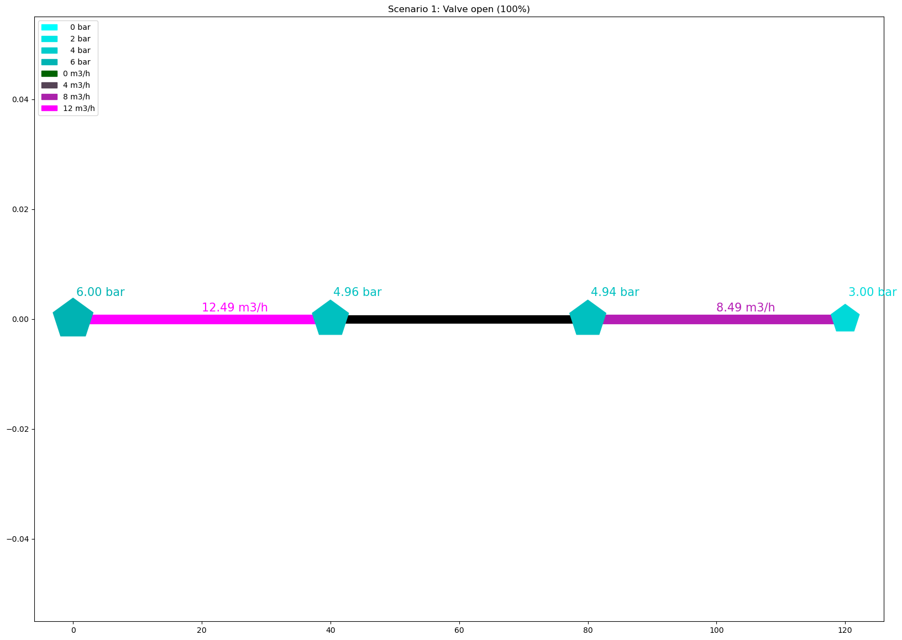
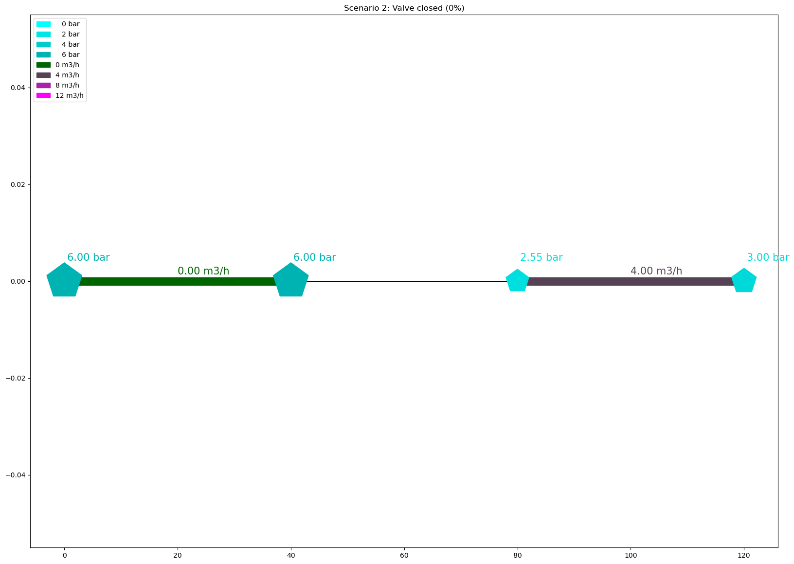
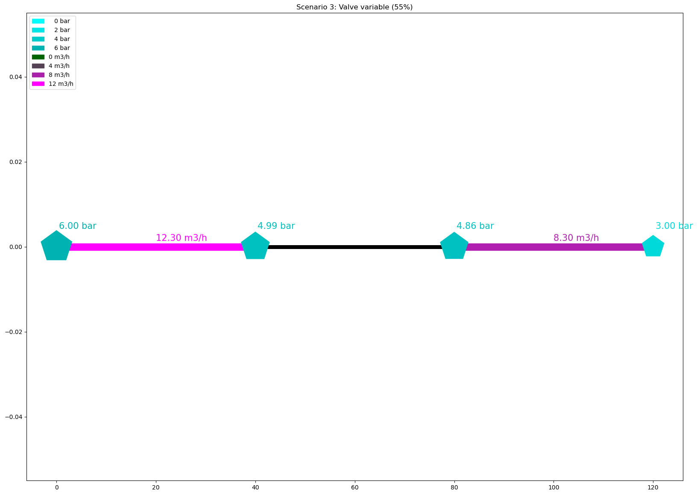

Tutorial 55: Compare Calculations
The Tutorial demonstrates how to execute calculations for the same model in adjusted valve positions (Betriebszustandsdaten/Operational status data) and view the individual results.
Imports
SIR 3S Toolkit
Regular Import/Init
[125]:
SIR3S_SIRGRAF_DIR = r"C:\3S\SIR 3S\SirGraf-90-15-00-24_Quebec-Upd2" #change to local path
[126]:
from sir3stoolkit.core import wrapper
[127]:
wrapper
[127]:
<module 'sir3stoolkit.core.wrapper' from 'C:\\Users\\aUsername\\3S\\sir3stoolkit\\src\\sir3stoolkit\\core\\wrapper.py'>
[128]:
wrapper.Initialize_Toolkit(SIR3S_SIRGRAF_DIR)
[2026-05-04 15:21:51,632] INFO in sir3stoolkit.core.wrapper: [Initialization] Using provided SirGraf path: C:\3S\SIR 3S\SirGraf-90-15-00-24_Quebec-Upd2
[2026-05-04 15:21:51,634] INFO in sir3stoolkit.core.wrapper: [Initialization] Initializing toolkit with SirGraf path: C:\3S\SIR 3S\SirGraf-90-15-00-24_Quebec-Upd2
Additional Import/Init for Dataframes class
[129]:
from sir3stoolkit.mantle.mantle import SIR3S_Model_Mantle
[130]:
s3s = SIR3S_Model_Mantle()
[2026-05-04 15:21:51,760] INFO in sir3stoolkit.core.wrapper: Initialization complete
Additional
[131]:
import matplotlib.pyplot as plt
[132]:
import networkx as nx
Open Model
For the tutorial we have a simple hydraulic setup. A node with 4 t/h net outflow simulates some consumption. It is supplied by two pipes. The one from the left has a boundary pressure of 6 bar and a valve, we will control, the one from the right has a boundary pressure of 3 bar and no valve.
[133]:
s3s.OpenModel(dbName=r"Toolkit_Tutorial55_Model.db3",
providerType=s3s.ProviderTypes.SQLite,
Mid="M-1-0-1",
saveCurrentlyOpenModel=False,
namedInstance="",
userID="",
password="")
[2026-05-04 15:21:57,554] INFO in sir3stoolkit.core.wrapper: Model is open for further operation
Valves:
‘bz.Indphi’: -1: geschlossen, 0: offen, 1: Tabellenverweis, 2: variabel
‘bz.Phio’: Stellung offen [%]
‘bz.Phig’: Stellung geschlossen [%]
‘bz.Phisoll’: Stellung variabel [%]
‘bz.Fkphi1’,
‘bz.Tiv’,
‘bz.IndPhiKonst’,
‘bz.IndphiKlartext’
Get Tk
[134]:
valve = s3s.GetTksofElementType(s3s.ObjectTypes.Valve)[0]
1. Scenario: Valve open (100%)
[135]:
s3s.SetValue(Tk=valve, propertyName="bz.Indphi", Value="0")
[2026-05-04 15:21:57,596] INFO in sir3stoolkit.core.wrapper: Value is set
[136]:
s3s.ExecCalculation(True)
[2026-05-04 15:22:01,626] INFO in sir3stoolkit.core.wrapper: Model Calculation is complete
[137]:
df_edges_1 = s3s.generate_edge_dataframe()
[2026-05-04 15:22:01,638] INFO in sir3stoolkit.mantle.dataframes: [edge dataframe] Generating dataframe for ObjectTypes.Pipe ...
[2026-05-04 15:22:01,641] INFO in sir3stoolkit.mantle.dataframes: [model_data] Generating model_data dataframe for element type: ObjectTypes.Pipe
[2026-05-04 15:22:01,643] INFO in sir3stoolkit.mantle.dataframes: [model_data] Retrieved 2 element(s) of element type ObjectTypes.Pipe.
[2026-05-04 15:22:01,645] INFO in sir3stoolkit.mantle.dataframes: [Resolving model_data Properties] Using 1 model_data properties.
[2026-05-04 15:22:01,645] INFO in sir3stoolkit.mantle.dataframes: [model_data] Retrieving model_data properties ['Fkcont'], geometry, end nodes...
[2026-05-04 15:22:01,650] INFO in sir3stoolkit.core.wrapper: Element inserted successfully into the model with Tk: 4860273710887904382
[2026-05-04 15:22:01,652] INFO in sir3stoolkit.core.wrapper: Element deleted successfully
[2026-05-04 15:22:01,653] INFO in sir3stoolkit.mantle.dataframes: [model_data] 2 non-empty end node columns were created.
[2026-05-04 15:22:01,667] WARNING in sir3stoolkit.mantle.dataframes: [model_data] Spatial Reference Identifier (SRID) not defined in model. DataFrame cannot be transformed to GeoDataFrame but geometry column can be created independently of SRID. Returning regular DataFrame with a geometry column.
[2026-05-04 15:22:01,668] INFO in sir3stoolkit.mantle.dataframes: [model_data] Done. Shape: (2, 6)
[2026-05-04 15:22:01,669] INFO in sir3stoolkit.mantle.dataframes: [results] Generating results dataframe for element type: ObjectTypes.Pipe
[2026-05-04 15:22:01,687] INFO in sir3stoolkit.mantle.dataframes: [Resolving Timestamps] Only static timestamp 2026-03-18 10:16:50.000 +01:00 is used
[2026-05-04 15:22:01,688] INFO in sir3stoolkit.mantle.dataframes: [Resolving Timestamps] 1 valid timestamp(s) will be used.
[2026-05-04 15:22:01,690] INFO in sir3stoolkit.mantle.dataframes: [Resolving tks] Retrieved 2 element(s) of element type ObjectTypes.Pipe.
[2026-05-04 15:22:01,693] INFO in sir3stoolkit.mantle.dataframes: [results] Using 0 result properties.
[2026-05-04 15:22:01,701] INFO in sir3stoolkit.core.wrapper: Element inserted successfully into the model with Tk: 5183818140276117670
[2026-05-04 15:22:01,703] INFO in sir3stoolkit.core.wrapper: Element deleted successfully
[2026-05-04 15:22:01,703] INFO in sir3stoolkit.mantle.dataframes: [results] Retrieving result values...
[2026-05-04 15:22:01,707] INFO in sir3stoolkit.mantle.dataframes: [results] 0 fully NaN columns dropped.
[2026-05-04 15:22:01,709] INFO in sir3stoolkit.mantle.dataframes: [results] Done. Shape: (0, 0)
[2026-05-04 15:22:01,717] INFO in sir3stoolkit.mantle.dataframes: [edge dataframe] Generated dataframe for ObjectTypes.Pipe.
[2026-05-04 15:22:01,717] INFO in sir3stoolkit.mantle.dataframes: [edge dataframe] Generating dataframe for ObjectTypes.Valve ...
[2026-05-04 15:22:01,720] INFO in sir3stoolkit.mantle.dataframes: [model_data] Generating model_data dataframe for element type: ObjectTypes.Valve
[2026-05-04 15:22:01,721] INFO in sir3stoolkit.mantle.dataframes: [model_data] Retrieved 1 element(s) of element type ObjectTypes.Valve.
[2026-05-04 15:22:01,722] INFO in sir3stoolkit.mantle.dataframes: [Resolving model_data Properties] Using 1 model_data properties.
[2026-05-04 15:22:01,722] INFO in sir3stoolkit.mantle.dataframes: [model_data] Retrieving model_data properties ['Fkcont'], geometry, end nodes...
[2026-05-04 15:22:01,726] INFO in sir3stoolkit.core.wrapper: Element inserted successfully into the model with Tk: 5629779958114632299
[2026-05-04 15:22:01,726] INFO in sir3stoolkit.core.wrapper: Element deleted successfully
[2026-05-04 15:22:01,726] INFO in sir3stoolkit.mantle.dataframes: [model_data] 2 non-empty end node columns were created.
[2026-05-04 15:22:01,741] WARNING in sir3stoolkit.mantle.dataframes: [model_data] Spatial Reference Identifier (SRID) not defined in model. DataFrame cannot be transformed to GeoDataFrame but geometry column can be created independently of SRID. Returning regular DataFrame with a geometry column.
[2026-05-04 15:22:01,742] INFO in sir3stoolkit.mantle.dataframes: [model_data] Done. Shape: (1, 6)
[2026-05-04 15:22:01,746] INFO in sir3stoolkit.mantle.dataframes: [results] Generating results dataframe for element type: ObjectTypes.Valve
[2026-05-04 15:22:01,871] INFO in sir3stoolkit.mantle.dataframes: [Resolving Timestamps] Only static timestamp 2026-03-18 10:16:50.000 +01:00 is used
[2026-05-04 15:22:01,871] INFO in sir3stoolkit.mantle.dataframes: [Resolving Timestamps] 1 valid timestamp(s) will be used.
[2026-05-04 15:22:01,874] INFO in sir3stoolkit.mantle.dataframes: [Resolving tks] Retrieved 1 element(s) of element type ObjectTypes.Valve.
[2026-05-04 15:22:01,877] INFO in sir3stoolkit.mantle.dataframes: [results] Using 0 result properties.
[2026-05-04 15:22:01,880] INFO in sir3stoolkit.core.wrapper: Element inserted successfully into the model with Tk: 4947336554271078874
[2026-05-04 15:22:01,883] INFO in sir3stoolkit.core.wrapper: Element deleted successfully
[2026-05-04 15:22:01,884] INFO in sir3stoolkit.mantle.dataframes: [results] Retrieving result values...
[2026-05-04 15:22:01,886] INFO in sir3stoolkit.mantle.dataframes: [results] 0 fully NaN columns dropped.
[2026-05-04 15:22:01,888] INFO in sir3stoolkit.mantle.dataframes: [results] Done. Shape: (0, 0)
[2026-05-04 15:22:01,899] INFO in sir3stoolkit.mantle.dataframes: [edge dataframe] Generated dataframe for ObjectTypes.Valve.
[2026-05-04 15:22:01,906] INFO in sir3stoolkit.mantle.dataframes: [edge dataframe] Retrieved 3 edges from 2 element types.
[138]:
df_pipes_1 = s3s.generate_element_dataframe(s3s.ObjectTypes.Pipe)
[2026-05-04 15:22:01,930] INFO in sir3stoolkit.mantle.dataframes: [generate_element_dataframe] Generating df for element type: ObjectTypes.Pipe ...
[2026-05-04 15:22:01,932] DEBUG in sir3stoolkit.mantle.dataframes: [generate_element_dataframe] Generating df_model_data for element type: ObjectTypes.Pipe ...
[2026-05-04 15:22:01,939] INFO in sir3stoolkit.core.wrapper: Element inserted successfully into the model with Tk: 5301574757688217111
[2026-05-04 15:22:01,942] INFO in sir3stoolkit.core.wrapper: Element deleted successfully
[2026-05-04 15:22:01,945] INFO in sir3stoolkit.mantle.dataframes: [model_data] Generating model_data dataframe for element type: ObjectTypes.Pipe
[2026-05-04 15:22:01,948] INFO in sir3stoolkit.mantle.dataframes: [model_data] Retrieved 2 element(s) of element type ObjectTypes.Pipe.
[2026-05-04 15:22:01,951] INFO in sir3stoolkit.mantle.dataframes: [Resolving model_data Properties] No properties given → using ALL model_data properties for ObjectTypes.Pipe.
[2026-05-04 15:22:01,951] INFO in sir3stoolkit.mantle.dataframes: [Resolving model_data Properties] Using 46 model_data properties.
[2026-05-04 15:22:01,952] INFO in sir3stoolkit.mantle.dataframes: [model_data] Retrieving model_data properties ['Name', 'FkdtroRowd', 'Fkltgr', 'Fkstrasse', 'L', 'Lzu', 'Rau', 'Jlambs', 'Lambda0', 'Zein', 'Zaus', 'Zuml', 'Asoll', 'Indschall', 'Baujahr', 'Hal', 'Fkcont', 'Fk2lrohr', 'Beschreibung', 'Idreferenz', 'Iplanung', 'Kvr', 'LineWidthMM', 'DottedLine', 'DN', 'Di', 'KvrKlartext', 'HasClosedNSCHs', 'Tk', 'Pk', 'InVariant', 'Xkor', 'Ykor', 'GeometriesDiffer', 'bz.Fk', 'bz.Qsvb', 'bz.Irtrenn', 'bz.Leckstatus', 'bz.Leckstart', 'bz.Leckend', 'bz.Leckort', 'bz.Leckmenge', 'bz.Imptnz', 'bz.Zvlimptnz', 'bz.Kantenzv', 'bz.ITrennWithNSCH'], geometry, end nodes...
[2026-05-04 15:22:01,956] INFO in sir3stoolkit.core.wrapper: Element inserted successfully into the model with Tk: 5271492448500427837
[2026-05-04 15:22:01,961] INFO in sir3stoolkit.core.wrapper: Element deleted successfully
[2026-05-04 15:22:01,974] INFO in sir3stoolkit.mantle.dataframes: [model_data] 2 non-empty end node columns were created.
[2026-05-04 15:22:02,259] WARNING in sir3stoolkit.mantle.dataframes: [model_data] Spatial Reference Identifier (SRID) not defined in model. DataFrame cannot be transformed to GeoDataFrame but geometry column can be created independently of SRID. Returning regular DataFrame with a geometry column.
[2026-05-04 15:22:02,263] INFO in sir3stoolkit.mantle.dataframes: [model_data] Done. Shape: (2, 67)
[2026-05-04 15:22:02,285] DEBUG in sir3stoolkit.mantle.dataframes: [generate_element_dataframe] Generating df_results for element type: ObjectTypes.Pipe; at timestamp: 2026-03-18 10:16:50.000 +01:00 ...
[2026-05-04 15:22:02,286] INFO in sir3stoolkit.mantle.dataframes: [results] Generating results dataframe for element type: ObjectTypes.Pipe
[2026-05-04 15:22:02,300] INFO in sir3stoolkit.mantle.dataframes: [Resolving Timestamps] Only static timestamp 2026-03-18 10:16:50.000 +01:00 is used
[2026-05-04 15:22:02,309] INFO in sir3stoolkit.mantle.dataframes: [Resolving Timestamps] 1 valid timestamp(s) will be used.
[2026-05-04 15:22:02,311] INFO in sir3stoolkit.mantle.dataframes: [Resolving tks] Retrieved 2 element(s) of element type ObjectTypes.Pipe.
[2026-05-04 15:22:02,314] INFO in sir3stoolkit.mantle.dataframes: [results] Using 82 result properties.
[2026-05-04 15:22:02,320] INFO in sir3stoolkit.core.wrapper: Element inserted successfully into the model with Tk: 5239489050073578304
[2026-05-04 15:22:02,323] INFO in sir3stoolkit.core.wrapper: Element deleted successfully
[2026-05-04 15:22:02,325] INFO in sir3stoolkit.mantle.dataframes: [results] Retrieving result values...
[2026-05-04 15:22:02,359] INFO in sir3stoolkit.mantle.dataframes: [results] 10 fully NaN columns dropped.
[2026-05-04 15:22:02,384] INFO in sir3stoolkit.mantle.dataframes: [results] Done. Shape: (1, 154)
[2026-05-04 15:22:02,384] DEBUG in sir3stoolkit.mantle.dataframes: [generate_element_dataframe] Merging df_model_data with df_results for element type: ObjectTypes.Pipe ...
[139]:
df_nodes_1 = s3s.generate_element_dataframe(s3s.ObjectTypes.Node)
[2026-05-04 15:22:02,462] INFO in sir3stoolkit.mantle.dataframes: [generate_element_dataframe] Generating df for element type: ObjectTypes.Node ...
[2026-05-04 15:22:02,463] DEBUG in sir3stoolkit.mantle.dataframes: [generate_element_dataframe] Generating df_model_data for element type: ObjectTypes.Node ...
[2026-05-04 15:22:02,468] INFO in sir3stoolkit.core.wrapper: Element inserted successfully into the model with Tk: 5735708193970655825
[2026-05-04 15:22:02,470] ERROR in sir3stoolkit.core.wrapper: Error: This Method doesnt apply to such Type of Elements: CKnot
[2026-05-04 15:22:02,476] INFO in sir3stoolkit.core.wrapper: Element deleted successfully
[2026-05-04 15:22:02,478] INFO in sir3stoolkit.mantle.dataframes: [model_data] Generating model_data dataframe for element type: ObjectTypes.Node
[2026-05-04 15:22:02,479] INFO in sir3stoolkit.mantle.dataframes: [model_data] Retrieved 4 element(s) of element type ObjectTypes.Node.
[2026-05-04 15:22:02,483] INFO in sir3stoolkit.mantle.dataframes: [Resolving model_data Properties] No properties given → using ALL model_data properties for ObjectTypes.Node.
[2026-05-04 15:22:02,484] INFO in sir3stoolkit.mantle.dataframes: [Resolving model_data Properties] Using 37 model_data properties.
[2026-05-04 15:22:02,487] INFO in sir3stoolkit.mantle.dataframes: [model_data] Retrieving model_data properties ['Name', 'Ktyp', 'Zkor', 'QmEin', 'Lfakt', 'Fkpzon', 'Fkfstf', 'Fkutmp', 'Fkfqps', 'Fkcont', 'Fk2lknot', 'Beschreibung', 'Idreferenz', 'Iplanung', 'Kvr', 'Qakt', 'Xkor', 'Ykor', 'NodeNamePosition', 'ShowNodeName', 'KvrKlartext', 'NumberOfVERB', 'HasBlockConnection', 'Tk', 'Pk', 'InVariant', 'GeometriesDiffer', 'SymbolFactor', 'bz.Drakonz', 'bz.Fk', 'bz.Fkpvar', 'bz.Fkqvar', 'bz.Fklfkt', 'bz.PhEin', 'bz.Tm', 'bz.Te', 'bz.PhMin'], geometry, end nodes...
[2026-05-04 15:22:02,494] INFO in sir3stoolkit.core.wrapper: Element inserted successfully into the model with Tk: 5725473515179390718
[2026-05-04 15:22:02,497] ERROR in sir3stoolkit.core.wrapper: Error: This Method doesnt apply to such Type of Elements: CKnot
[2026-05-04 15:22:02,502] INFO in sir3stoolkit.core.wrapper: Element deleted successfully
[2026-05-04 15:22:02,508] ERROR in sir3stoolkit.core.wrapper: Error: This Method doesnt apply to such Type of Elements: CKnot
[2026-05-04 15:22:02,515] ERROR in sir3stoolkit.core.wrapper: Error: This Method doesnt apply to such Type of Elements: CKnot
[2026-05-04 15:22:02,519] ERROR in sir3stoolkit.core.wrapper: Error: This Method doesnt apply to such Type of Elements: CKnot
[2026-05-04 15:22:02,525] ERROR in sir3stoolkit.core.wrapper: Error: This Method doesnt apply to such Type of Elements: CKnot
[2026-05-04 15:22:02,527] INFO in sir3stoolkit.mantle.dataframes: [model_data] 0 non-empty end node columns were created.
[2026-05-04 15:22:02,676] WARNING in sir3stoolkit.mantle.dataframes: [model_data] Spatial Reference Identifier (SRID) not defined in model. DataFrame cannot be transformed to GeoDataFrame but geometry column can be created independently of SRID. Returning regular DataFrame with a geometry column.
[2026-05-04 15:22:02,683] INFO in sir3stoolkit.mantle.dataframes: [model_data] Done. Shape: (4, 39)
[2026-05-04 15:22:02,818] DEBUG in sir3stoolkit.mantle.dataframes: [generate_element_dataframe] Generating df_results for element type: ObjectTypes.Node; at timestamp: 2026-03-18 10:16:50.000 +01:00 ...
[2026-05-04 15:22:02,820] INFO in sir3stoolkit.mantle.dataframes: [results] Generating results dataframe for element type: ObjectTypes.Node
[2026-05-04 15:22:02,846] INFO in sir3stoolkit.mantle.dataframes: [Resolving Timestamps] Only static timestamp 2026-03-18 10:16:50.000 +01:00 is used
[2026-05-04 15:22:02,846] INFO in sir3stoolkit.mantle.dataframes: [Resolving Timestamps] 1 valid timestamp(s) will be used.
[2026-05-04 15:22:02,850] INFO in sir3stoolkit.mantle.dataframes: [Resolving tks] Retrieved 4 element(s) of element type ObjectTypes.Node.
[2026-05-04 15:22:02,852] INFO in sir3stoolkit.mantle.dataframes: [results] Using 73 result properties.
[2026-05-04 15:22:02,860] INFO in sir3stoolkit.core.wrapper: Element inserted successfully into the model with Tk: 5750644537464040746
[2026-05-04 15:22:02,862] ERROR in sir3stoolkit.core.wrapper: Error: This Method doesnt apply to such Type of Elements: CKnot
[2026-05-04 15:22:02,865] INFO in sir3stoolkit.core.wrapper: Element deleted successfully
[2026-05-04 15:22:02,867] INFO in sir3stoolkit.mantle.dataframes: [results] Retrieving result values...
[2026-05-04 15:22:02,871] WARNING in sir3stoolkit.mantle.dataframes: [results] Non-numeric value for 'ESQUELLSP' at '2026-03-18 10:16:50.000 +01:00':
[2026-05-04 15:22:02,879] WARNING in sir3stoolkit.mantle.dataframes: [results] Non-numeric value for 'FITT_SUBTYPE' at '2026-03-18 10:16:50.000 +01:00': [2026-05-04 15:22:02,886] WARNING in sir3stoolkit.mantle.dataframes: [results] Non-numeric value for 'FITT_VBTYPE1' at '2026-03-18 10:16:50.000 +01:00': [2026-05-04 15:22:02,889] WARNING in sir3stoolkit.mantle.dataframes: [results] Non-numeric value for 'FITT_VBTYPE2' at '2026-03-18 10:16:50.000 +01:00': [2026-05-04 15:22:02,898] WARNING in sir3stoolkit.mantle.dataframes: [results] Non-numeric value for 'FITT_VBTYPE3' at '2026-03-18 10:16:50.000 +01:00': [2026-05-04 15:22:02,903] WARNING in sir3stoolkit.mantle.dataframes: [results] Non-numeric value for 'FSTF_NAME' at '2026-03-18 10:16:50.000 +01:00': Standard
[2026-05-04 15:22:02,907] WARNING in sir3stoolkit.mantle.dataframes: [results] Non-numeric value for 'LFKT' at '2026-03-18 10:16:50.000 +01:00': [2026-05-04 15:22:02,913] WARNING in sir3stoolkit.mantle.dataframes: [results] Non-numeric value for 'PVAR' at '2026-03-18 10:16:50.000 +01:00': [2026-05-04 15:22:02,915] WARNING in sir3stoolkit.mantle.dataframes: [results] Non-numeric value for 'QVAR' at '2026-03-18 10:16:50.000 +01:00': [2026-05-04 15:22:02,920] WARNING in sir3stoolkit.mantle.dataframes: [results] Non-numeric value for 'ESQUELLSP' at '2026-03-18 10:16:50.000 +01:00':
[2026-05-04 15:22:02,923] WARNING in sir3stoolkit.mantle.dataframes: [results] Non-numeric value for 'FITT_SUBTYPE' at '2026-03-18 10:16:50.000 +01:00': [2026-05-04 15:22:02,926] WARNING in sir3stoolkit.mantle.dataframes: [results] Non-numeric value for 'FITT_VBTYPE1' at '2026-03-18 10:16:50.000 +01:00': [2026-05-04 15:22:02,928] WARNING in sir3stoolkit.mantle.dataframes: [results] Non-numeric value for 'FITT_VBTYPE2' at '2026-03-18 10:16:50.000 +01:00': [2026-05-04 15:22:02,931] WARNING in sir3stoolkit.mantle.dataframes: [results] Non-numeric value for 'FITT_VBTYPE3' at '2026-03-18 10:16:50.000 +01:00': [2026-05-04 15:22:02,933] WARNING in sir3stoolkit.mantle.dataframes: [results] Non-numeric value for 'FSTF_NAME' at '2026-03-18 10:16:50.000 +01:00': Standard
[2026-05-04 15:22:02,937] WARNING in sir3stoolkit.mantle.dataframes: [results] Non-numeric value for 'LFKT' at '2026-03-18 10:16:50.000 +01:00': [2026-05-04 15:22:02,942] WARNING in sir3stoolkit.mantle.dataframes: [results] Non-numeric value for 'PVAR' at '2026-03-18 10:16:50.000 +01:00': [2026-05-04 15:22:02,947] WARNING in sir3stoolkit.mantle.dataframes: [results] Non-numeric value for 'QVAR' at '2026-03-18 10:16:50.000 +01:00': [2026-05-04 15:22:02,957] WARNING in sir3stoolkit.mantle.dataframes: [results] Non-numeric value for 'ESQUELLSP' at '2026-03-18 10:16:50.000 +01:00':
[2026-05-04 15:22:02,963] WARNING in sir3stoolkit.mantle.dataframes: [results] Non-numeric value for 'FITT_SUBTYPE' at '2026-03-18 10:16:50.000 +01:00': [2026-05-04 15:22:02,965] WARNING in sir3stoolkit.mantle.dataframes: [results] Non-numeric value for 'FITT_VBTYPE1' at '2026-03-18 10:16:50.000 +01:00': [2026-05-04 15:22:02,967] WARNING in sir3stoolkit.mantle.dataframes: [results] Non-numeric value for 'FITT_VBTYPE2' at '2026-03-18 10:16:50.000 +01:00': [2026-05-04 15:22:02,970] WARNING in sir3stoolkit.mantle.dataframes: [results] Non-numeric value for 'FITT_VBTYPE3' at '2026-03-18 10:16:50.000 +01:00': [2026-05-04 15:22:02,970] WARNING in sir3stoolkit.mantle.dataframes: [results] Non-numeric value for 'FSTF_NAME' at '2026-03-18 10:16:50.000 +01:00': Standard
[2026-05-04 15:22:02,977] WARNING in sir3stoolkit.mantle.dataframes: [results] Non-numeric value for 'LFKT' at '2026-03-18 10:16:50.000 +01:00': [2026-05-04 15:22:02,982] WARNING in sir3stoolkit.mantle.dataframes: [results] Non-numeric value for 'PVAR' at '2026-03-18 10:16:50.000 +01:00': [2026-05-04 15:22:02,986] WARNING in sir3stoolkit.mantle.dataframes: [results] Non-numeric value for 'QVAR' at '2026-03-18 10:16:50.000 +01:00': [2026-05-04 15:22:02,992] WARNING in sir3stoolkit.mantle.dataframes: [results] Non-numeric value for 'ESQUELLSP' at '2026-03-18 10:16:50.000 +01:00':
[2026-05-04 15:22:02,997] WARNING in sir3stoolkit.mantle.dataframes: [results] Non-numeric value for 'FITT_SUBTYPE' at '2026-03-18 10:16:50.000 +01:00': [2026-05-04 15:22:02,999] WARNING in sir3stoolkit.mantle.dataframes: [results] Non-numeric value for 'FITT_VBTYPE1' at '2026-03-18 10:16:50.000 +01:00': [2026-05-04 15:22:03,002] WARNING in sir3stoolkit.mantle.dataframes: [results] Non-numeric value for 'FITT_VBTYPE2' at '2026-03-18 10:16:50.000 +01:00': [2026-05-04 15:22:03,003] WARNING in sir3stoolkit.mantle.dataframes: [results] Non-numeric value for 'FITT_VBTYPE3' at '2026-03-18 10:16:50.000 +01:00': [2026-05-04 15:22:03,006] WARNING in sir3stoolkit.mantle.dataframes: [results] Non-numeric value for 'FSTF_NAME' at '2026-03-18 10:16:50.000 +01:00': Standard
[2026-05-04 15:22:03,011] WARNING in sir3stoolkit.mantle.dataframes: [results] Non-numeric value for 'LFKT' at '2026-03-18 10:16:50.000 +01:00': [2026-05-04 15:22:03,015] WARNING in sir3stoolkit.mantle.dataframes: [results] Non-numeric value for 'PVAR' at '2026-03-18 10:16:50.000 +01:00': [2026-05-04 15:22:03,018] WARNING in sir3stoolkit.mantle.dataframes: [results] Non-numeric value for 'QVAR' at '2026-03-18 10:16:50.000 +01:00': [2026-05-04 15:22:03,034] INFO in sir3stoolkit.mantle.dataframes: [results] 76 fully NaN columns dropped.
[2026-05-04 15:22:03,034] ERROR in sir3stoolkit.core.wrapper: Error: This Method doesnt apply to such Type of Elements: CKnot
[2026-05-04 15:22:03,037] ERROR in sir3stoolkit.core.wrapper: Error: This Method doesnt apply to such Type of Elements: CKnot
[2026-05-04 15:22:03,041] ERROR in sir3stoolkit.core.wrapper: Error: This Method doesnt apply to such Type of Elements: CKnot
[2026-05-04 15:22:03,044] ERROR in sir3stoolkit.core.wrapper: Error: This Method doesnt apply to such Type of Elements: CKnot
[2026-05-04 15:22:03,047] ERROR in sir3stoolkit.core.wrapper: Error: This Method doesnt apply to such Type of Elements: CKnot
[2026-05-04 15:22:03,048] ERROR in sir3stoolkit.core.wrapper: Error: This Method doesnt apply to such Type of Elements: CKnot
[2026-05-04 15:22:03,052] ERROR in sir3stoolkit.core.wrapper: Error: This Method doesnt apply to such Type of Elements: CKnot
[2026-05-04 15:22:03,052] ERROR in sir3stoolkit.core.wrapper: Error: This Method doesnt apply to such Type of Elements: CKnot
[2026-05-04 15:22:03,056] ERROR in sir3stoolkit.core.wrapper: Error: This Method doesnt apply to such Type of Elements: CKnot
[2026-05-04 15:22:03,058] ERROR in sir3stoolkit.core.wrapper: Error: This Method doesnt apply to such Type of Elements: CKnot
[2026-05-04 15:22:03,058] ERROR in sir3stoolkit.core.wrapper: Error: This Method doesnt apply to such Type of Elements: CKnot
[2026-05-04 15:22:03,064] ERROR in sir3stoolkit.core.wrapper: Error: This Method doesnt apply to such Type of Elements: CKnot
[2026-05-04 15:22:03,067] ERROR in sir3stoolkit.core.wrapper: Error: This Method doesnt apply to such Type of Elements: CKnot
[2026-05-04 15:22:03,067] ERROR in sir3stoolkit.core.wrapper: Error: This Method doesnt apply to such Type of Elements: CKnot
[2026-05-04 15:22:03,070] ERROR in sir3stoolkit.core.wrapper: Error: This Method doesnt apply to such Type of Elements: CKnot
[2026-05-04 15:22:03,072] ERROR in sir3stoolkit.core.wrapper: Error: This Method doesnt apply to such Type of Elements: CKnot
[2026-05-04 15:22:03,075] ERROR in sir3stoolkit.core.wrapper: Error: This Method doesnt apply to such Type of Elements: CKnot
[2026-05-04 15:22:03,078] ERROR in sir3stoolkit.core.wrapper: Error: This Method doesnt apply to such Type of Elements: CKnot
[2026-05-04 15:22:03,080] ERROR in sir3stoolkit.core.wrapper: Error: This Method doesnt apply to such Type of Elements: CKnot
[2026-05-04 15:22:03,083] ERROR in sir3stoolkit.core.wrapper: Error: This Method doesnt apply to such Type of Elements: CKnot
[2026-05-04 15:22:03,085] ERROR in sir3stoolkit.core.wrapper: Error: This Method doesnt apply to such Type of Elements: CKnot
[2026-05-04 15:22:03,087] ERROR in sir3stoolkit.core.wrapper: Error: This Method doesnt apply to such Type of Elements: CKnot
[2026-05-04 15:22:03,089] ERROR in sir3stoolkit.core.wrapper: Error: This Method doesnt apply to such Type of Elements: CKnot
[2026-05-04 15:22:03,092] ERROR in sir3stoolkit.core.wrapper: Error: This Method doesnt apply to such Type of Elements: CKnot
[2026-05-04 15:22:03,092] ERROR in sir3stoolkit.core.wrapper: Error: This Method doesnt apply to such Type of Elements: CKnot
[2026-05-04 15:22:03,098] ERROR in sir3stoolkit.core.wrapper: Error: This Method doesnt apply to such Type of Elements: CKnot
[2026-05-04 15:22:03,101] ERROR in sir3stoolkit.core.wrapper: Error: This Method doesnt apply to such Type of Elements: CKnot
[2026-05-04 15:22:03,103] ERROR in sir3stoolkit.core.wrapper: Error: This Method doesnt apply to such Type of Elements: CKnot
[2026-05-04 15:22:03,104] ERROR in sir3stoolkit.core.wrapper: Error: This Method doesnt apply to such Type of Elements: CKnot
[2026-05-04 15:22:03,108] ERROR in sir3stoolkit.core.wrapper: Error: This Method doesnt apply to such Type of Elements: CKnot
[2026-05-04 15:22:03,111] ERROR in sir3stoolkit.core.wrapper: Error: This Method doesnt apply to such Type of Elements: CKnot
[2026-05-04 15:22:03,115] ERROR in sir3stoolkit.core.wrapper: Error: This Method doesnt apply to such Type of Elements: CKnot
[2026-05-04 15:22:03,117] ERROR in sir3stoolkit.core.wrapper: Error: This Method doesnt apply to such Type of Elements: CKnot
[2026-05-04 15:22:03,119] ERROR in sir3stoolkit.core.wrapper: Error: This Method doesnt apply to such Type of Elements: CKnot
[2026-05-04 15:22:03,121] ERROR in sir3stoolkit.core.wrapper: Error: This Method doesnt apply to such Type of Elements: CKnot
[2026-05-04 15:22:03,124] ERROR in sir3stoolkit.core.wrapper: Error: This Method doesnt apply to such Type of Elements: CKnot
[2026-05-04 15:22:03,127] ERROR in sir3stoolkit.core.wrapper: Error: This Method doesnt apply to such Type of Elements: CKnot
[2026-05-04 15:22:03,130] ERROR in sir3stoolkit.core.wrapper: Error: This Method doesnt apply to such Type of Elements: CKnot
[2026-05-04 15:22:03,130] ERROR in sir3stoolkit.core.wrapper: Error: This Method doesnt apply to such Type of Elements: CKnot
[2026-05-04 15:22:03,134] ERROR in sir3stoolkit.core.wrapper: Error: This Method doesnt apply to such Type of Elements: CKnot
[2026-05-04 15:22:03,137] ERROR in sir3stoolkit.core.wrapper: Error: This Method doesnt apply to such Type of Elements: CKnot
[2026-05-04 15:22:03,138] ERROR in sir3stoolkit.core.wrapper: Error: This Method doesnt apply to such Type of Elements: CKnot
[2026-05-04 15:22:03,142] ERROR in sir3stoolkit.core.wrapper: Error: This Method doesnt apply to such Type of Elements: CKnot
[2026-05-04 15:22:03,142] ERROR in sir3stoolkit.core.wrapper: Error: This Method doesnt apply to such Type of Elements: CKnot
[2026-05-04 15:22:03,148] ERROR in sir3stoolkit.core.wrapper: Error: This Method doesnt apply to such Type of Elements: CKnot
[2026-05-04 15:22:03,151] ERROR in sir3stoolkit.core.wrapper: Error: This Method doesnt apply to such Type of Elements: CKnot
[2026-05-04 15:22:03,152] ERROR in sir3stoolkit.core.wrapper: Error: This Method doesnt apply to such Type of Elements: CKnot
[2026-05-04 15:22:03,154] ERROR in sir3stoolkit.core.wrapper: Error: This Method doesnt apply to such Type of Elements: CKnot
[2026-05-04 15:22:03,154] ERROR in sir3stoolkit.core.wrapper: Error: This Method doesnt apply to such Type of Elements: CKnot
[2026-05-04 15:22:03,159] ERROR in sir3stoolkit.core.wrapper: Error: This Method doesnt apply to such Type of Elements: CKnot
[2026-05-04 15:22:03,159] ERROR in sir3stoolkit.core.wrapper: Error: This Method doesnt apply to such Type of Elements: CKnot
[2026-05-04 15:22:03,163] ERROR in sir3stoolkit.core.wrapper: Error: This Method doesnt apply to such Type of Elements: CKnot
[2026-05-04 15:22:03,167] ERROR in sir3stoolkit.core.wrapper: Error: This Method doesnt apply to such Type of Elements: CKnot
[2026-05-04 15:22:03,169] ERROR in sir3stoolkit.core.wrapper: Error: This Method doesnt apply to such Type of Elements: CKnot
[2026-05-04 15:22:03,171] ERROR in sir3stoolkit.core.wrapper: Error: This Method doesnt apply to such Type of Elements: CKnot
[2026-05-04 15:22:03,173] ERROR in sir3stoolkit.core.wrapper: Error: This Method doesnt apply to such Type of Elements: CKnot
[2026-05-04 15:22:03,176] ERROR in sir3stoolkit.core.wrapper: Error: This Method doesnt apply to such Type of Elements: CKnot
[2026-05-04 15:22:03,179] ERROR in sir3stoolkit.core.wrapper: Error: This Method doesnt apply to such Type of Elements: CKnot
[2026-05-04 15:22:03,180] ERROR in sir3stoolkit.core.wrapper: Error: This Method doesnt apply to such Type of Elements: CKnot
[2026-05-04 15:22:03,183] ERROR in sir3stoolkit.core.wrapper: Error: This Method doesnt apply to such Type of Elements: CKnot
[2026-05-04 15:22:03,187] ERROR in sir3stoolkit.core.wrapper: Error: This Method doesnt apply to such Type of Elements: CKnot
[2026-05-04 15:22:03,189] ERROR in sir3stoolkit.core.wrapper: Error: This Method doesnt apply to such Type of Elements: CKnot
[2026-05-04 15:22:03,192] ERROR in sir3stoolkit.core.wrapper: Error: This Method doesnt apply to such Type of Elements: CKnot
[2026-05-04 15:22:03,195] ERROR in sir3stoolkit.core.wrapper: Error: This Method doesnt apply to such Type of Elements: CKnot
[2026-05-04 15:22:03,198] ERROR in sir3stoolkit.core.wrapper: Error: This Method doesnt apply to such Type of Elements: CKnot
[2026-05-04 15:22:03,200] ERROR in sir3stoolkit.core.wrapper: Error: This Method doesnt apply to such Type of Elements: CKnot
[2026-05-04 15:22:03,201] ERROR in sir3stoolkit.core.wrapper: Error: This Method doesnt apply to such Type of Elements: CKnot
[2026-05-04 15:22:03,205] ERROR in sir3stoolkit.core.wrapper: Error: This Method doesnt apply to such Type of Elements: CKnot
[2026-05-04 15:22:03,206] ERROR in sir3stoolkit.core.wrapper: Error: This Method doesnt apply to such Type of Elements: CKnot
[2026-05-04 15:22:03,209] ERROR in sir3stoolkit.core.wrapper: Error: This Method doesnt apply to such Type of Elements: CKnot
[2026-05-04 15:22:03,211] ERROR in sir3stoolkit.core.wrapper: Error: This Method doesnt apply to such Type of Elements: CKnot
[2026-05-04 15:22:03,213] ERROR in sir3stoolkit.core.wrapper: Error: This Method doesnt apply to such Type of Elements: CKnot
[2026-05-04 15:22:03,217] ERROR in sir3stoolkit.core.wrapper: Error: This Method doesnt apply to such Type of Elements: CKnot
[2026-05-04 15:22:03,219] ERROR in sir3stoolkit.core.wrapper: Error: This Method doesnt apply to such Type of Elements: CKnot
[2026-05-04 15:22:03,221] ERROR in sir3stoolkit.core.wrapper: Error: This Method doesnt apply to such Type of Elements: CKnot
[2026-05-04 15:22:03,224] ERROR in sir3stoolkit.core.wrapper: Error: This Method doesnt apply to such Type of Elements: CKnot
[2026-05-04 15:22:03,227] ERROR in sir3stoolkit.core.wrapper: Error: This Method doesnt apply to such Type of Elements: CKnot
[2026-05-04 15:22:03,231] ERROR in sir3stoolkit.core.wrapper: Error: This Method doesnt apply to such Type of Elements: CKnot
[2026-05-04 15:22:03,232] ERROR in sir3stoolkit.core.wrapper: Error: This Method doesnt apply to such Type of Elements: CKnot
[2026-05-04 15:22:03,234] ERROR in sir3stoolkit.core.wrapper: Error: This Method doesnt apply to such Type of Elements: CKnot
[2026-05-04 15:22:03,237] ERROR in sir3stoolkit.core.wrapper: Error: This Method doesnt apply to such Type of Elements: CKnot
[2026-05-04 15:22:03,238] ERROR in sir3stoolkit.core.wrapper: Error: This Method doesnt apply to such Type of Elements: CKnot
[2026-05-04 15:22:03,242] ERROR in sir3stoolkit.core.wrapper: Error: This Method doesnt apply to such Type of Elements: CKnot
[2026-05-04 15:22:03,244] ERROR in sir3stoolkit.core.wrapper: Error: This Method doesnt apply to such Type of Elements: CKnot
[2026-05-04 15:22:03,247] ERROR in sir3stoolkit.core.wrapper: Error: This Method doesnt apply to such Type of Elements: CKnot
[2026-05-04 15:22:03,250] ERROR in sir3stoolkit.core.wrapper: Error: This Method doesnt apply to such Type of Elements: CKnot
[2026-05-04 15:22:03,251] ERROR in sir3stoolkit.core.wrapper: Error: This Method doesnt apply to such Type of Elements: CKnot
[2026-05-04 15:22:03,254] ERROR in sir3stoolkit.core.wrapper: Error: This Method doesnt apply to such Type of Elements: CKnot
[2026-05-04 15:22:03,257] ERROR in sir3stoolkit.core.wrapper: Error: This Method doesnt apply to such Type of Elements: CKnot
[2026-05-04 15:22:03,259] ERROR in sir3stoolkit.core.wrapper: Error: This Method doesnt apply to such Type of Elements: CKnot
[2026-05-04 15:22:03,259] ERROR in sir3stoolkit.core.wrapper: Error: This Method doesnt apply to such Type of Elements: CKnot
[2026-05-04 15:22:03,265] ERROR in sir3stoolkit.core.wrapper: Error: This Method doesnt apply to such Type of Elements: CKnot
[2026-05-04 15:22:03,267] ERROR in sir3stoolkit.core.wrapper: Error: This Method doesnt apply to such Type of Elements: CKnot
[2026-05-04 15:22:03,269] ERROR in sir3stoolkit.core.wrapper: Error: This Method doesnt apply to such Type of Elements: CKnot
[2026-05-04 15:22:03,273] ERROR in sir3stoolkit.core.wrapper: Error: This Method doesnt apply to such Type of Elements: CKnot
[2026-05-04 15:22:03,274] ERROR in sir3stoolkit.core.wrapper: Error: This Method doesnt apply to such Type of Elements: CKnot
[2026-05-04 15:22:03,276] ERROR in sir3stoolkit.core.wrapper: Error: This Method doesnt apply to such Type of Elements: CKnot
[2026-05-04 15:22:03,278] ERROR in sir3stoolkit.core.wrapper: Error: This Method doesnt apply to such Type of Elements: CKnot
[2026-05-04 15:22:03,281] ERROR in sir3stoolkit.core.wrapper: Error: This Method doesnt apply to such Type of Elements: CKnot
[2026-05-04 15:22:03,284] ERROR in sir3stoolkit.core.wrapper: Error: This Method doesnt apply to such Type of Elements: CKnot
[2026-05-04 15:22:03,286] ERROR in sir3stoolkit.core.wrapper: Error: This Method doesnt apply to such Type of Elements: CKnot
[2026-05-04 15:22:03,289] ERROR in sir3stoolkit.core.wrapper: Error: This Method doesnt apply to such Type of Elements: CKnot
[2026-05-04 15:22:03,292] ERROR in sir3stoolkit.core.wrapper: Error: This Method doesnt apply to such Type of Elements: CKnot
[2026-05-04 15:22:03,295] ERROR in sir3stoolkit.core.wrapper: Error: This Method doesnt apply to such Type of Elements: CKnot
[2026-05-04 15:22:03,298] ERROR in sir3stoolkit.core.wrapper: Error: This Method doesnt apply to such Type of Elements: CKnot
[2026-05-04 15:22:03,300] ERROR in sir3stoolkit.core.wrapper: Error: This Method doesnt apply to such Type of Elements: CKnot
[2026-05-04 15:22:03,301] ERROR in sir3stoolkit.core.wrapper: Error: This Method doesnt apply to such Type of Elements: CKnot
[2026-05-04 15:22:03,301] ERROR in sir3stoolkit.core.wrapper: Error: This Method doesnt apply to such Type of Elements: CKnot
[2026-05-04 15:22:03,307] ERROR in sir3stoolkit.core.wrapper: Error: This Method doesnt apply to such Type of Elements: CKnot
[2026-05-04 15:22:03,308] ERROR in sir3stoolkit.core.wrapper: Error: This Method doesnt apply to such Type of Elements: CKnot
[2026-05-04 15:22:03,314] ERROR in sir3stoolkit.core.wrapper: Error: This Method doesnt apply to such Type of Elements: CKnot
[2026-05-04 15:22:03,316] ERROR in sir3stoolkit.core.wrapper: Error: This Method doesnt apply to such Type of Elements: CKnot
[2026-05-04 15:22:03,317] ERROR in sir3stoolkit.core.wrapper: Error: This Method doesnt apply to such Type of Elements: CKnot
[2026-05-04 15:22:03,321] ERROR in sir3stoolkit.core.wrapper: Error: This Method doesnt apply to such Type of Elements: CKnot
[2026-05-04 15:22:03,323] ERROR in sir3stoolkit.core.wrapper: Error: This Method doesnt apply to such Type of Elements: CKnot
[2026-05-04 15:22:03,325] ERROR in sir3stoolkit.core.wrapper: Error: This Method doesnt apply to such Type of Elements: CKnot
[2026-05-04 15:22:03,329] ERROR in sir3stoolkit.core.wrapper: Error: This Method doesnt apply to such Type of Elements: CKnot
[2026-05-04 15:22:03,329] ERROR in sir3stoolkit.core.wrapper: Error: This Method doesnt apply to such Type of Elements: CKnot
[2026-05-04 15:22:03,334] ERROR in sir3stoolkit.core.wrapper: Error: This Method doesnt apply to such Type of Elements: CKnot
[2026-05-04 15:22:03,337] ERROR in sir3stoolkit.core.wrapper: Error: This Method doesnt apply to such Type of Elements: CKnot
[2026-05-04 15:22:03,339] ERROR in sir3stoolkit.core.wrapper: Error: This Method doesnt apply to such Type of Elements: CKnot
[2026-05-04 15:22:03,341] ERROR in sir3stoolkit.core.wrapper: Error: This Method doesnt apply to such Type of Elements: CKnot
[2026-05-04 15:22:03,343] ERROR in sir3stoolkit.core.wrapper: Error: This Method doesnt apply to such Type of Elements: CKnot
[2026-05-04 15:22:03,343] ERROR in sir3stoolkit.core.wrapper: Error: This Method doesnt apply to such Type of Elements: CKnot
[2026-05-04 15:22:03,348] ERROR in sir3stoolkit.core.wrapper: Error: This Method doesnt apply to such Type of Elements: CKnot
[2026-05-04 15:22:03,351] ERROR in sir3stoolkit.core.wrapper: Error: This Method doesnt apply to such Type of Elements: CKnot
[2026-05-04 15:22:03,353] ERROR in sir3stoolkit.core.wrapper: Error: This Method doesnt apply to such Type of Elements: CKnot
[2026-05-04 15:22:03,357] ERROR in sir3stoolkit.core.wrapper: Error: This Method doesnt apply to such Type of Elements: CKnot
[2026-05-04 15:22:03,358] ERROR in sir3stoolkit.core.wrapper: Error: This Method doesnt apply to such Type of Elements: CKnot
[2026-05-04 15:22:03,363] ERROR in sir3stoolkit.core.wrapper: Error: This Method doesnt apply to such Type of Elements: CKnot
[2026-05-04 15:22:03,364] ERROR in sir3stoolkit.core.wrapper: Error: This Method doesnt apply to such Type of Elements: CKnot
[2026-05-04 15:22:03,367] ERROR in sir3stoolkit.core.wrapper: Error: This Method doesnt apply to such Type of Elements: CKnot
[2026-05-04 15:22:03,368] ERROR in sir3stoolkit.core.wrapper: Error: This Method doesnt apply to such Type of Elements: CKnot
[2026-05-04 15:22:03,368] ERROR in sir3stoolkit.core.wrapper: Error: This Method doesnt apply to such Type of Elements: CKnot
[2026-05-04 15:22:03,368] ERROR in sir3stoolkit.core.wrapper: Error: This Method doesnt apply to such Type of Elements: CKnot
[2026-05-04 15:22:03,378] ERROR in sir3stoolkit.core.wrapper: Error: This Method doesnt apply to such Type of Elements: CKnot
[2026-05-04 15:22:03,380] ERROR in sir3stoolkit.core.wrapper: Error: This Method doesnt apply to such Type of Elements: CKnot
[2026-05-04 15:22:03,383] ERROR in sir3stoolkit.core.wrapper: Error: This Method doesnt apply to such Type of Elements: CKnot
[2026-05-04 15:22:03,385] ERROR in sir3stoolkit.core.wrapper: Error: This Method doesnt apply to such Type of Elements: CKnot
[2026-05-04 15:22:03,385] ERROR in sir3stoolkit.core.wrapper: Error: This Method doesnt apply to such Type of Elements: CKnot
[2026-05-04 15:22:03,390] ERROR in sir3stoolkit.core.wrapper: Error: This Method doesnt apply to such Type of Elements: CKnot
[2026-05-04 15:22:03,393] ERROR in sir3stoolkit.core.wrapper: Error: This Method doesnt apply to such Type of Elements: CKnot
[2026-05-04 15:22:03,394] ERROR in sir3stoolkit.core.wrapper: Error: This Method doesnt apply to such Type of Elements: CKnot
[2026-05-04 15:22:03,397] ERROR in sir3stoolkit.core.wrapper: Error: This Method doesnt apply to such Type of Elements: CKnot
[2026-05-04 15:22:03,400] ERROR in sir3stoolkit.core.wrapper: Error: This Method doesnt apply to such Type of Elements: CKnot
[2026-05-04 15:22:03,402] ERROR in sir3stoolkit.core.wrapper: Error: This Method doesnt apply to such Type of Elements: CKnot
[2026-05-04 15:22:03,405] ERROR in sir3stoolkit.core.wrapper: Error: This Method doesnt apply to such Type of Elements: CKnot
[2026-05-04 15:22:03,407] ERROR in sir3stoolkit.core.wrapper: Error: This Method doesnt apply to such Type of Elements: CKnot
[2026-05-04 15:22:03,411] ERROR in sir3stoolkit.core.wrapper: Error: This Method doesnt apply to such Type of Elements: CKnot
[2026-05-04 15:22:03,413] ERROR in sir3stoolkit.core.wrapper: Error: This Method doesnt apply to such Type of Elements: CKnot
[2026-05-04 15:22:03,413] ERROR in sir3stoolkit.core.wrapper: Error: This Method doesnt apply to such Type of Elements: CKnot
[2026-05-04 15:22:03,418] ERROR in sir3stoolkit.core.wrapper: Error: This Method doesnt apply to such Type of Elements: CKnot
[2026-05-04 15:22:03,420] ERROR in sir3stoolkit.core.wrapper: Error: This Method doesnt apply to such Type of Elements: CKnot
[2026-05-04 15:22:03,422] ERROR in sir3stoolkit.core.wrapper: Error: This Method doesnt apply to such Type of Elements: CKnot
[2026-05-04 15:22:03,425] ERROR in sir3stoolkit.core.wrapper: Error: This Method doesnt apply to such Type of Elements: CKnot
[2026-05-04 15:22:03,425] ERROR in sir3stoolkit.core.wrapper: Error: This Method doesnt apply to such Type of Elements: CKnot
[2026-05-04 15:22:03,431] ERROR in sir3stoolkit.core.wrapper: Error: This Method doesnt apply to such Type of Elements: CKnot
[2026-05-04 15:22:03,433] ERROR in sir3stoolkit.core.wrapper: Error: This Method doesnt apply to such Type of Elements: CKnot
[2026-05-04 15:22:03,433] ERROR in sir3stoolkit.core.wrapper: Error: This Method doesnt apply to such Type of Elements: CKnot
[2026-05-04 15:22:03,438] ERROR in sir3stoolkit.core.wrapper: Error: This Method doesnt apply to such Type of Elements: CKnot
[2026-05-04 15:22:03,441] ERROR in sir3stoolkit.core.wrapper: Error: This Method doesnt apply to such Type of Elements: CKnot
[2026-05-04 15:22:03,442] ERROR in sir3stoolkit.core.wrapper: Error: This Method doesnt apply to such Type of Elements: CKnot
[2026-05-04 15:22:03,447] ERROR in sir3stoolkit.core.wrapper: Error: This Method doesnt apply to such Type of Elements: CKnot
[2026-05-04 15:22:03,450] ERROR in sir3stoolkit.core.wrapper: Error: This Method doesnt apply to such Type of Elements: CKnot
[2026-05-04 15:22:03,451] ERROR in sir3stoolkit.core.wrapper: Error: This Method doesnt apply to such Type of Elements: CKnot
[2026-05-04 15:22:03,451] ERROR in sir3stoolkit.core.wrapper: Error: This Method doesnt apply to such Type of Elements: CKnot
[2026-05-04 15:22:03,458] ERROR in sir3stoolkit.core.wrapper: Error: This Method doesnt apply to such Type of Elements: CKnot
[2026-05-04 15:22:03,460] ERROR in sir3stoolkit.core.wrapper: Error: This Method doesnt apply to such Type of Elements: CKnot
[2026-05-04 15:22:03,463] ERROR in sir3stoolkit.core.wrapper: Error: This Method doesnt apply to such Type of Elements: CKnot
[2026-05-04 15:22:03,465] ERROR in sir3stoolkit.core.wrapper: Error: This Method doesnt apply to such Type of Elements: CKnot
[2026-05-04 15:22:03,467] ERROR in sir3stoolkit.core.wrapper: Error: This Method doesnt apply to such Type of Elements: CKnot
[2026-05-04 15:22:03,467] ERROR in sir3stoolkit.core.wrapper: Error: This Method doesnt apply to such Type of Elements: CKnot
[2026-05-04 15:22:03,473] ERROR in sir3stoolkit.core.wrapper: Error: This Method doesnt apply to such Type of Elements: CKnot
[2026-05-04 15:22:03,475] ERROR in sir3stoolkit.core.wrapper: Error: This Method doesnt apply to such Type of Elements: CKnot
[2026-05-04 15:22:03,479] ERROR in sir3stoolkit.core.wrapper: Error: This Method doesnt apply to such Type of Elements: CKnot
[2026-05-04 15:22:03,481] ERROR in sir3stoolkit.core.wrapper: Error: This Method doesnt apply to such Type of Elements: CKnot
[2026-05-04 15:22:03,484] ERROR in sir3stoolkit.core.wrapper: Error: This Method doesnt apply to such Type of Elements: CKnot
[2026-05-04 15:22:03,485] ERROR in sir3stoolkit.core.wrapper: Error: This Method doesnt apply to such Type of Elements: CKnot
[2026-05-04 15:22:03,488] ERROR in sir3stoolkit.core.wrapper: Error: This Method doesnt apply to such Type of Elements: CKnot
[2026-05-04 15:22:03,489] ERROR in sir3stoolkit.core.wrapper: Error: This Method doesnt apply to such Type of Elements: CKnot
[2026-05-04 15:22:03,493] ERROR in sir3stoolkit.core.wrapper: Error: This Method doesnt apply to such Type of Elements: CKnot
[2026-05-04 15:22:03,497] ERROR in sir3stoolkit.core.wrapper: Error: This Method doesnt apply to such Type of Elements: CKnot
[2026-05-04 15:22:03,498] ERROR in sir3stoolkit.core.wrapper: Error: This Method doesnt apply to such Type of Elements: CKnot
[2026-05-04 15:22:03,501] ERROR in sir3stoolkit.core.wrapper: Error: This Method doesnt apply to such Type of Elements: CKnot
[2026-05-04 15:22:03,504] ERROR in sir3stoolkit.core.wrapper: Error: This Method doesnt apply to such Type of Elements: CKnot
[2026-05-04 15:22:03,506] ERROR in sir3stoolkit.core.wrapper: Error: This Method doesnt apply to such Type of Elements: CKnot
[2026-05-04 15:22:03,508] ERROR in sir3stoolkit.core.wrapper: Error: This Method doesnt apply to such Type of Elements: CKnot
[2026-05-04 15:22:03,508] ERROR in sir3stoolkit.core.wrapper: Error: This Method doesnt apply to such Type of Elements: CKnot
[2026-05-04 15:22:03,515] ERROR in sir3stoolkit.core.wrapper: Error: This Method doesnt apply to such Type of Elements: CKnot
[2026-05-04 15:22:03,517] ERROR in sir3stoolkit.core.wrapper: Error: This Method doesnt apply to such Type of Elements: CKnot
[2026-05-04 15:22:03,519] ERROR in sir3stoolkit.core.wrapper: Error: This Method doesnt apply to such Type of Elements: CKnot
[2026-05-04 15:22:03,522] ERROR in sir3stoolkit.core.wrapper: Error: This Method doesnt apply to such Type of Elements: CKnot
[2026-05-04 15:22:03,525] ERROR in sir3stoolkit.core.wrapper: Error: This Method doesnt apply to such Type of Elements: CKnot
[2026-05-04 15:22:03,528] ERROR in sir3stoolkit.core.wrapper: Error: This Method doesnt apply to such Type of Elements: CKnot
[2026-05-04 15:22:03,532] ERROR in sir3stoolkit.core.wrapper: Error: This Method doesnt apply to such Type of Elements: CKnot
[2026-05-04 15:22:03,534] ERROR in sir3stoolkit.core.wrapper: Error: This Method doesnt apply to such Type of Elements: CKnot
[2026-05-04 15:22:03,537] ERROR in sir3stoolkit.core.wrapper: Error: This Method doesnt apply to such Type of Elements: CKnot
[2026-05-04 15:22:03,539] ERROR in sir3stoolkit.core.wrapper: Error: This Method doesnt apply to such Type of Elements: CKnot
[2026-05-04 15:22:03,542] ERROR in sir3stoolkit.core.wrapper: Error: This Method doesnt apply to such Type of Elements: CKnot
[2026-05-04 15:22:03,544] ERROR in sir3stoolkit.core.wrapper: Error: This Method doesnt apply to such Type of Elements: CKnot
[2026-05-04 15:22:03,548] ERROR in sir3stoolkit.core.wrapper: Error: This Method doesnt apply to such Type of Elements: CKnot
[2026-05-04 15:22:03,551] ERROR in sir3stoolkit.core.wrapper: Error: This Method doesnt apply to such Type of Elements: CKnot
[2026-05-04 15:22:03,552] ERROR in sir3stoolkit.core.wrapper: Error: This Method doesnt apply to such Type of Elements: CKnot
[2026-05-04 15:22:03,556] ERROR in sir3stoolkit.core.wrapper: Error: This Method doesnt apply to such Type of Elements: CKnot
[2026-05-04 15:22:03,558] ERROR in sir3stoolkit.core.wrapper: Error: This Method doesnt apply to such Type of Elements: CKnot
[2026-05-04 15:22:03,559] ERROR in sir3stoolkit.core.wrapper: Error: This Method doesnt apply to such Type of Elements: CKnot
[2026-05-04 15:22:03,564] ERROR in sir3stoolkit.core.wrapper: Error: This Method doesnt apply to such Type of Elements: CKnot
[2026-05-04 15:22:03,567] ERROR in sir3stoolkit.core.wrapper: Error: This Method doesnt apply to such Type of Elements: CKnot
[2026-05-04 15:22:03,568] ERROR in sir3stoolkit.core.wrapper: Error: This Method doesnt apply to such Type of Elements: CKnot
[2026-05-04 15:22:03,569] ERROR in sir3stoolkit.core.wrapper: Error: This Method doesnt apply to such Type of Elements: CKnot
[2026-05-04 15:22:03,573] ERROR in sir3stoolkit.core.wrapper: Error: This Method doesnt apply to such Type of Elements: CKnot
[2026-05-04 15:22:03,575] ERROR in sir3stoolkit.core.wrapper: Error: This Method doesnt apply to such Type of Elements: CKnot
[2026-05-04 15:22:03,578] ERROR in sir3stoolkit.core.wrapper: Error: This Method doesnt apply to such Type of Elements: CKnot
[2026-05-04 15:22:03,581] ERROR in sir3stoolkit.core.wrapper: Error: This Method doesnt apply to such Type of Elements: CKnot
[2026-05-04 15:22:03,585] ERROR in sir3stoolkit.core.wrapper: Error: This Method doesnt apply to such Type of Elements: CKnot
[2026-05-04 15:22:03,587] ERROR in sir3stoolkit.core.wrapper: Error: This Method doesnt apply to such Type of Elements: CKnot
[2026-05-04 15:22:03,593] INFO in sir3stoolkit.mantle.dataframes: [results] Done. Shape: (1, 216)
[2026-05-04 15:22:03,593] DEBUG in sir3stoolkit.mantle.dataframes: [generate_element_dataframe] Merging df_model_data with df_results for element type: ObjectTypes.Node ...
[140]:
df_nodes_1
[140]:
| tk | Name | Ktyp | Zkor | QmEin | Lfakt | Fkpzon | Fkfstf | Fkutmp | Fkfqps | Fkcont | Fk2lknot | Beschreibung | Idreferenz | Iplanung | Kvr | Qakt | Xkor | Ykor | NodeNamePosition | ShowNodeName | KvrKlartext | NumberOfVERB | HasBlockConnection | Tk | Pk | InVariant | GeometriesDiffer | SymbolFactor | bz.Drakonz | bz.Fk | bz.Fkpvar | bz.Fkqvar | bz.Fklfkt | bz.PhEin | bz.Tm | bz.Te | bz.PhMin | geometry | BCIND | BCIND_CALC | BCIND_FLOW | BCIND_MODEL | BCIND_SOURCE | BCIND_TYPE | CP | DP | DPH | DYNVISKO | ESQUELLSP | FITT_ANGLE | FITT_BASTYPE | FITT_DP1 | FITT_DP2 | FITT_DP3 | FITT_STATE | FITT_SUBTYPE | FITT_VBTYPE1 | FITT_VBTYPE2 | FITT_VBTYPE3 | FITT_ZETA1 | FITT_ZETA2 | FITT_ZETA3 | FSTF_NAME | H | HMAX_INST | HMIN_INST | IAKTIV | LFAKTAKT | LFKT | M | P | PDAMPF | PH | PHMINMAXDIF | PH_EIN | PH_MIN | PMAX_INST | PMIN_INST | PVAR | Q2 | QM | QMABS | QVAR | RHO | T | TE | TMAX_INST | TMIN_INST | TTR | VOLD | WALTER | ZHKNR | |
|---|---|---|---|---|---|---|---|---|---|---|---|---|---|---|---|---|---|---|---|---|---|---|---|---|---|---|---|---|---|---|---|---|---|---|---|---|---|---|---|---|---|---|---|---|---|---|---|---|---|---|---|---|---|---|---|---|---|---|---|---|---|---|---|---|---|---|---|---|---|---|---|---|---|---|---|---|---|---|---|---|---|---|---|---|---|---|---|---|---|---|---|---|---|
| 0 | 4627226928120134070 | NODE02 | QKON | 0 | 0 | 1 | -1 | 5035918757120503777 | 4966523102239983321 | -1 | 4744960050823542042 | -1 | Upstream of valve | 2 | 1 | 1 | 0 | 40 | 0 | 1 | False | Vorlauf | 0 | False | 4627226928120134070 | 4627226928120134070 | False | False | 1 | 0 | 4627226928120134070 | -1 | -1 | -1 | 0 | 0 | 0 | 0 | POINT Z (40 0 0) | 17.0 | 0.0 | 0.0 | 16.0 | 0.0 | 1.0 | 4.2074 | -3.333333e+32 | -3.333333e+32 | 0.001729 | NaN | -3.333333e+32 | -333333333.0 | -3.333333e+32 | -3.333333e+32 | -3.333333e+32 | -333333333.0 | NaN | NaN | NaN | NaN | -3.333333e+32 | -3.333333e+32 | -3.333333e+32 | NaN | 3.960598 | 3.960598 | 3.960598 | 0.0 | 1.0 | NaN | 0.000000 | 4.960598 | 0.0066 | 3.960598 | 0.0 | 3.960598 | 0.0 | 4.960598 | 4.960598 | NaN | -3.333333e+32 | 0.000000 | 0.000000 | NaN | 1000.5 | 0.0 | 0.0 | 0.0 | 0.0 | 0.000644 | 0.0 | -3.333333e+32 | 0.0 |
| 1 | 4853856122080314724 | NODE03 | QKON | 0 | -4 | 1 | -1 | 5035918757120503777 | 4966523102239983321 | -1 | 4744960050823542042 | -1 | Downstream of valve | 3 | 1 | 1 | -4 | 80 | 0 | 1 | False | Vorlauf | 0 | False | 4853856122080314724 | 4853856122080314724 | False | False | 1 | 0 | 4853856122080314724 | -1 | -1 | -1 | 0 | 0 | 0 | 0 | POINT Z (80 0 0) | 21.0 | 0.0 | 4.0 | 16.0 | 0.0 | 1.0 | 4.2074 | -3.333333e+32 | -3.333333e+32 | 0.001729 | NaN | -3.333333e+32 | -333333333.0 | -3.333333e+32 | -3.333333e+32 | -3.333333e+32 | -333333333.0 | NaN | NaN | NaN | NaN | -3.333333e+32 | -3.333333e+32 | -3.333333e+32 | NaN | 3.942002 | 3.942002 | 3.942002 | 0.0 | 1.0 | NaN | -1.111111 | 4.942002 | 0.0066 | 3.942002 | 0.0 | 3.942002 | 0.0 | 4.942002 | 4.942002 | NaN | -3.333333e+32 | -4.000000 | 4.000000 | NaN | 1000.5 | 0.0 | 0.0 | 0.0 | 0.0 | 0.000644 | 0.0 | -3.333333e+32 | 0.0 |
| 2 | 5631143277892559364 | NODE04 | PKON | 0 | -10 | 1 | -1 | 5035918757120503777 | 4966523102239983321 | -1 | 4744960050823542042 | -1 | Template Element for single Node Creation | 3S5612430692880892331 | 1 | 1 | 0 | 120 | 0 | 1 | False | Vorlauf | 0 | False | 5631143277892559364 | 5631143277892559364 | False | False | 1 | 0 | 5631143277892559364 | -1 | -1 | -1 | 2 | 0 | 0 | 0 | POINT Z (120 0 0) | 20.0 | 0.0 | 4.0 | 16.0 | 0.0 | 0.0 | 4.2074 | -3.333333e+32 | -3.333333e+32 | 0.001729 | NaN | -3.333333e+32 | -333333333.0 | -3.333333e+32 | -3.333333e+32 | -3.333333e+32 | -333333333.0 | NaN | NaN | NaN | NaN | -3.333333e+32 | -3.333333e+32 | -3.333333e+32 | NaN | 2.000000 | 2.000000 | 2.000000 | 0.0 | 1.0 | NaN | -2.357887 | 3.000000 | 0.0066 | 2.000000 | 0.0 | 2.000000 | 0.0 | 3.000000 | 3.000000 | NaN | -3.333333e+32 | -8.488394 | 8.488394 | NaN | 1000.5 | 0.0 | 0.0 | 0.0 | 0.0 | 0.004436 | 0.0 | -3.333333e+32 | 0.0 |
| 3 | 5698868843196465579 | NODE01 | PKON | 0 | 0 | 1 | -1 | 5035918757120503777 | 4966523102239983321 | -1 | 4744960050823542042 | -1 | Upstream of valve | 1 | 1 | 1 | 0 | 0 | 0 | 1 | False | Vorlauf | 0 | False | 5698868843196465579 | 5698868843196465579 | False | False | 1 | 0 | 5698868843196465579 | -1 | -1 | -1 | 5 | 0 | 0 | 0 | POINT Z (0 0 0) | 24.0 | 0.0 | 8.0 | 16.0 | 0.0 | 0.0 | 4.2074 | -3.333333e+32 | -3.333333e+32 | 0.001729 | NaN | -3.333333e+32 | -333333333.0 | -3.333333e+32 | -3.333333e+32 | -3.333333e+32 | -333333333.0 | NaN | NaN | NaN | NaN | -3.333333e+32 | -3.333333e+32 | -3.333333e+32 | NaN | 5.000000 | 5.000000 | 5.000000 | 0.0 | 1.0 | NaN | 3.468998 | 6.000000 | 0.0066 | 5.000000 | 0.0 | 5.000000 | 0.0 | 6.000000 | 6.000000 | NaN | -3.333333e+32 | 12.488390 | 12.488390 | NaN | 1000.5 | 0.0 | 0.0 | 0.0 | 0.0 | 0.000000 | 0.0 | -3.333333e+32 | 0.0 |
2. Scenario: Valve closed (0%)
[141]:
s3s.SetValue(Tk=valve, propertyName="bz.Indphi", Value="-1")
[2026-05-04 15:22:03,900] INFO in sir3stoolkit.core.wrapper: Value is set
[142]:
s3s.ExecCalculation(True)
[2026-05-04 15:22:08,029] INFO in sir3stoolkit.core.wrapper: Model Calculation is complete
[143]:
df_pipes_2 = s3s.generate_element_dataframe(s3s.ObjectTypes.Pipe)
[2026-05-04 15:22:08,042] INFO in sir3stoolkit.mantle.dataframes: [generate_element_dataframe] Generating df for element type: ObjectTypes.Pipe ...
[2026-05-04 15:22:08,044] DEBUG in sir3stoolkit.mantle.dataframes: [generate_element_dataframe] Generating df_model_data for element type: ObjectTypes.Pipe ...
[2026-05-04 15:22:08,049] INFO in sir3stoolkit.core.wrapper: Element inserted successfully into the model with Tk: 5535530061708114318
[2026-05-04 15:22:08,053] INFO in sir3stoolkit.core.wrapper: Element deleted successfully
[2026-05-04 15:22:08,053] INFO in sir3stoolkit.mantle.dataframes: [model_data] Generating model_data dataframe for element type: ObjectTypes.Pipe
[2026-05-04 15:22:08,057] INFO in sir3stoolkit.mantle.dataframes: [model_data] Retrieved 2 element(s) of element type ObjectTypes.Pipe.
[2026-05-04 15:22:08,061] INFO in sir3stoolkit.mantle.dataframes: [Resolving model_data Properties] No properties given → using ALL model_data properties for ObjectTypes.Pipe.
[2026-05-04 15:22:08,061] INFO in sir3stoolkit.mantle.dataframes: [Resolving model_data Properties] Using 46 model_data properties.
[2026-05-04 15:22:08,063] INFO in sir3stoolkit.mantle.dataframes: [model_data] Retrieving model_data properties ['Name', 'FkdtroRowd', 'Fkltgr', 'Fkstrasse', 'L', 'Lzu', 'Rau', 'Jlambs', 'Lambda0', 'Zein', 'Zaus', 'Zuml', 'Asoll', 'Indschall', 'Baujahr', 'Hal', 'Fkcont', 'Fk2lrohr', 'Beschreibung', 'Idreferenz', 'Iplanung', 'Kvr', 'LineWidthMM', 'DottedLine', 'DN', 'Di', 'KvrKlartext', 'HasClosedNSCHs', 'Tk', 'Pk', 'InVariant', 'Xkor', 'Ykor', 'GeometriesDiffer', 'bz.Fk', 'bz.Qsvb', 'bz.Irtrenn', 'bz.Leckstatus', 'bz.Leckstart', 'bz.Leckend', 'bz.Leckort', 'bz.Leckmenge', 'bz.Imptnz', 'bz.Zvlimptnz', 'bz.Kantenzv', 'bz.ITrennWithNSCH'], geometry, end nodes...
[2026-05-04 15:22:08,069] INFO in sir3stoolkit.core.wrapper: Element inserted successfully into the model with Tk: 5673276515353710657
[2026-05-04 15:22:08,069] INFO in sir3stoolkit.core.wrapper: Element deleted successfully
[2026-05-04 15:22:08,084] INFO in sir3stoolkit.mantle.dataframes: [model_data] 2 non-empty end node columns were created.
[2026-05-04 15:22:08,377] WARNING in sir3stoolkit.mantle.dataframes: [model_data] Spatial Reference Identifier (SRID) not defined in model. DataFrame cannot be transformed to GeoDataFrame but geometry column can be created independently of SRID. Returning regular DataFrame with a geometry column.
[2026-05-04 15:22:08,380] INFO in sir3stoolkit.mantle.dataframes: [model_data] Done. Shape: (2, 67)
[2026-05-04 15:22:08,406] DEBUG in sir3stoolkit.mantle.dataframes: [generate_element_dataframe] Generating df_results for element type: ObjectTypes.Pipe; at timestamp: 2026-03-18 10:16:50.000 +01:00 ...
[2026-05-04 15:22:08,408] INFO in sir3stoolkit.mantle.dataframes: [results] Generating results dataframe for element type: ObjectTypes.Pipe
[2026-05-04 15:22:08,430] INFO in sir3stoolkit.mantle.dataframes: [Resolving Timestamps] Only static timestamp 2026-03-18 10:16:50.000 +01:00 is used
[2026-05-04 15:22:08,432] INFO in sir3stoolkit.mantle.dataframes: [Resolving Timestamps] 1 valid timestamp(s) will be used.
[2026-05-04 15:22:08,432] INFO in sir3stoolkit.mantle.dataframes: [Resolving tks] Retrieved 2 element(s) of element type ObjectTypes.Pipe.
[2026-05-04 15:22:08,434] INFO in sir3stoolkit.mantle.dataframes: [results] Using 82 result properties.
[2026-05-04 15:22:08,442] INFO in sir3stoolkit.core.wrapper: Element inserted successfully into the model with Tk: 4859167814219063116
[2026-05-04 15:22:08,447] INFO in sir3stoolkit.core.wrapper: Element deleted successfully
[2026-05-04 15:22:08,447] INFO in sir3stoolkit.mantle.dataframes: [results] Retrieving result values...
[2026-05-04 15:22:08,483] INFO in sir3stoolkit.mantle.dataframes: [results] 10 fully NaN columns dropped.
[2026-05-04 15:22:08,512] INFO in sir3stoolkit.mantle.dataframes: [results] Done. Shape: (1, 154)
[2026-05-04 15:22:08,514] DEBUG in sir3stoolkit.mantle.dataframes: [generate_element_dataframe] Merging df_model_data with df_results for element type: ObjectTypes.Pipe ...
[144]:
df_nodes_2 = s3s.generate_element_dataframe(s3s.ObjectTypes.Node)
[2026-05-04 15:22:08,586] INFO in sir3stoolkit.mantle.dataframes: [generate_element_dataframe] Generating df for element type: ObjectTypes.Node ...
[2026-05-04 15:22:08,588] DEBUG in sir3stoolkit.mantle.dataframes: [generate_element_dataframe] Generating df_model_data for element type: ObjectTypes.Node ...
[2026-05-04 15:22:08,595] INFO in sir3stoolkit.core.wrapper: Element inserted successfully into the model with Tk: 4803956357976905690
[2026-05-04 15:22:08,598] ERROR in sir3stoolkit.core.wrapper: Error: This Method doesnt apply to such Type of Elements: CKnot
[2026-05-04 15:22:08,600] INFO in sir3stoolkit.core.wrapper: Element deleted successfully
[2026-05-04 15:22:08,603] INFO in sir3stoolkit.mantle.dataframes: [model_data] Generating model_data dataframe for element type: ObjectTypes.Node
[2026-05-04 15:22:08,605] INFO in sir3stoolkit.mantle.dataframes: [model_data] Retrieved 4 element(s) of element type ObjectTypes.Node.
[2026-05-04 15:22:08,607] INFO in sir3stoolkit.mantle.dataframes: [Resolving model_data Properties] No properties given → using ALL model_data properties for ObjectTypes.Node.
[2026-05-04 15:22:08,610] INFO in sir3stoolkit.mantle.dataframes: [Resolving model_data Properties] Using 37 model_data properties.
[2026-05-04 15:22:08,611] INFO in sir3stoolkit.mantle.dataframes: [model_data] Retrieving model_data properties ['Name', 'Ktyp', 'Zkor', 'QmEin', 'Lfakt', 'Fkpzon', 'Fkfstf', 'Fkutmp', 'Fkfqps', 'Fkcont', 'Fk2lknot', 'Beschreibung', 'Idreferenz', 'Iplanung', 'Kvr', 'Qakt', 'Xkor', 'Ykor', 'NodeNamePosition', 'ShowNodeName', 'KvrKlartext', 'NumberOfVERB', 'HasBlockConnection', 'Tk', 'Pk', 'InVariant', 'GeometriesDiffer', 'SymbolFactor', 'bz.Drakonz', 'bz.Fk', 'bz.Fkpvar', 'bz.Fkqvar', 'bz.Fklfkt', 'bz.PhEin', 'bz.Tm', 'bz.Te', 'bz.PhMin'], geometry, end nodes...
[2026-05-04 15:22:08,615] INFO in sir3stoolkit.core.wrapper: Element inserted successfully into the model with Tk: 4614501610968166989
[2026-05-04 15:22:08,618] ERROR in sir3stoolkit.core.wrapper: Error: This Method doesnt apply to such Type of Elements: CKnot
[2026-05-04 15:22:08,619] INFO in sir3stoolkit.core.wrapper: Element deleted successfully
[2026-05-04 15:22:08,624] ERROR in sir3stoolkit.core.wrapper: Error: This Method doesnt apply to such Type of Elements: CKnot
[2026-05-04 15:22:08,629] ERROR in sir3stoolkit.core.wrapper: Error: This Method doesnt apply to such Type of Elements: CKnot
[2026-05-04 15:22:08,633] ERROR in sir3stoolkit.core.wrapper: Error: This Method doesnt apply to such Type of Elements: CKnot
[2026-05-04 15:22:08,637] ERROR in sir3stoolkit.core.wrapper: Error: This Method doesnt apply to such Type of Elements: CKnot
[2026-05-04 15:22:08,638] INFO in sir3stoolkit.mantle.dataframes: [model_data] 0 non-empty end node columns were created.
[2026-05-04 15:22:08,748] WARNING in sir3stoolkit.mantle.dataframes: [model_data] Spatial Reference Identifier (SRID) not defined in model. DataFrame cannot be transformed to GeoDataFrame but geometry column can be created independently of SRID. Returning regular DataFrame with a geometry column.
[2026-05-04 15:22:08,750] INFO in sir3stoolkit.mantle.dataframes: [model_data] Done. Shape: (4, 39)
[2026-05-04 15:22:08,781] DEBUG in sir3stoolkit.mantle.dataframes: [generate_element_dataframe] Generating df_results for element type: ObjectTypes.Node; at timestamp: 2026-03-18 10:16:50.000 +01:00 ...
[2026-05-04 15:22:08,782] INFO in sir3stoolkit.mantle.dataframes: [results] Generating results dataframe for element type: ObjectTypes.Node
[2026-05-04 15:22:08,814] INFO in sir3stoolkit.mantle.dataframes: [Resolving Timestamps] Only static timestamp 2026-03-18 10:16:50.000 +01:00 is used
[2026-05-04 15:22:08,815] INFO in sir3stoolkit.mantle.dataframes: [Resolving Timestamps] 1 valid timestamp(s) will be used.
[2026-05-04 15:22:08,818] INFO in sir3stoolkit.mantle.dataframes: [Resolving tks] Retrieved 4 element(s) of element type ObjectTypes.Node.
[2026-05-04 15:22:08,821] INFO in sir3stoolkit.mantle.dataframes: [results] Using 73 result properties.
[2026-05-04 15:22:08,832] INFO in sir3stoolkit.core.wrapper: Element inserted successfully into the model with Tk: 5502920683175732158
[2026-05-04 15:22:08,834] ERROR in sir3stoolkit.core.wrapper: Error: This Method doesnt apply to such Type of Elements: CKnot
[2026-05-04 15:22:08,836] INFO in sir3stoolkit.core.wrapper: Element deleted successfully
[2026-05-04 15:22:08,839] INFO in sir3stoolkit.mantle.dataframes: [results] Retrieving result values...
[2026-05-04 15:22:08,844] WARNING in sir3stoolkit.mantle.dataframes: [results] Non-numeric value for 'ESQUELLSP' at '2026-03-18 10:16:50.000 +01:00':
[2026-05-04 15:22:08,848] WARNING in sir3stoolkit.mantle.dataframes: [results] Non-numeric value for 'FITT_SUBTYPE' at '2026-03-18 10:16:50.000 +01:00': [2026-05-04 15:22:08,848] WARNING in sir3stoolkit.mantle.dataframes: [results] Non-numeric value for 'FITT_VBTYPE1' at '2026-03-18 10:16:50.000 +01:00': [2026-05-04 15:22:08,851] WARNING in sir3stoolkit.mantle.dataframes: [results] Non-numeric value for 'FITT_VBTYPE2' at '2026-03-18 10:16:50.000 +01:00': [2026-05-04 15:22:08,853] WARNING in sir3stoolkit.mantle.dataframes: [results] Non-numeric value for 'FITT_VBTYPE3' at '2026-03-18 10:16:50.000 +01:00': [2026-05-04 15:22:08,855] WARNING in sir3stoolkit.mantle.dataframes: [results] Non-numeric value for 'FSTF_NAME' at '2026-03-18 10:16:50.000 +01:00': Standard
[2026-05-04 15:22:08,861] WARNING in sir3stoolkit.mantle.dataframes: [results] Non-numeric value for 'LFKT' at '2026-03-18 10:16:50.000 +01:00': [2026-05-04 15:22:08,864] WARNING in sir3stoolkit.mantle.dataframes: [results] Non-numeric value for 'PVAR' at '2026-03-18 10:16:50.000 +01:00': [2026-05-04 15:22:08,868] WARNING in sir3stoolkit.mantle.dataframes: [results] Non-numeric value for 'QVAR' at '2026-03-18 10:16:50.000 +01:00': [2026-05-04 15:22:08,875] WARNING in sir3stoolkit.mantle.dataframes: [results] Non-numeric value for 'ESQUELLSP' at '2026-03-18 10:16:50.000 +01:00':
[2026-05-04 15:22:08,879] WARNING in sir3stoolkit.mantle.dataframes: [results] Non-numeric value for 'FITT_SUBTYPE' at '2026-03-18 10:16:50.000 +01:00': [2026-05-04 15:22:08,880] WARNING in sir3stoolkit.mantle.dataframes: [results] Non-numeric value for 'FITT_VBTYPE1' at '2026-03-18 10:16:50.000 +01:00': [2026-05-04 15:22:08,882] WARNING in sir3stoolkit.mantle.dataframes: [results] Non-numeric value for 'FITT_VBTYPE2' at '2026-03-18 10:16:50.000 +01:00': [2026-05-04 15:22:08,884] WARNING in sir3stoolkit.mantle.dataframes: [results] Non-numeric value for 'FITT_VBTYPE3' at '2026-03-18 10:16:50.000 +01:00': [2026-05-04 15:22:08,886] WARNING in sir3stoolkit.mantle.dataframes: [results] Non-numeric value for 'FSTF_NAME' at '2026-03-18 10:16:50.000 +01:00': Standard
[2026-05-04 15:22:08,891] WARNING in sir3stoolkit.mantle.dataframes: [results] Non-numeric value for 'LFKT' at '2026-03-18 10:16:50.000 +01:00': [2026-05-04 15:22:08,897] WARNING in sir3stoolkit.mantle.dataframes: [results] Non-numeric value for 'PVAR' at '2026-03-18 10:16:50.000 +01:00': [2026-05-04 15:22:08,898] WARNING in sir3stoolkit.mantle.dataframes: [results] Non-numeric value for 'QVAR' at '2026-03-18 10:16:50.000 +01:00': [2026-05-04 15:22:08,901] WARNING in sir3stoolkit.mantle.dataframes: [results] Non-numeric value for 'ESQUELLSP' at '2026-03-18 10:16:50.000 +01:00':
[2026-05-04 15:22:08,911] WARNING in sir3stoolkit.mantle.dataframes: [results] Non-numeric value for 'FITT_SUBTYPE' at '2026-03-18 10:16:50.000 +01:00': [2026-05-04 15:22:08,913] WARNING in sir3stoolkit.mantle.dataframes: [results] Non-numeric value for 'FITT_VBTYPE1' at '2026-03-18 10:16:50.000 +01:00': [2026-05-04 15:22:08,917] WARNING in sir3stoolkit.mantle.dataframes: [results] Non-numeric value for 'FITT_VBTYPE2' at '2026-03-18 10:16:50.000 +01:00': [2026-05-04 15:22:08,917] WARNING in sir3stoolkit.mantle.dataframes: [results] Non-numeric value for 'FITT_VBTYPE3' at '2026-03-18 10:16:50.000 +01:00': [2026-05-04 15:22:08,958] WARNING in sir3stoolkit.mantle.dataframes: [results] Non-numeric value for 'FSTF_NAME' at '2026-03-18 10:16:50.000 +01:00': Standard
[2026-05-04 15:22:08,964] WARNING in sir3stoolkit.mantle.dataframes: [results] Non-numeric value for 'LFKT' at '2026-03-18 10:16:50.000 +01:00': [2026-05-04 15:22:08,970] WARNING in sir3stoolkit.mantle.dataframes: [results] Non-numeric value for 'PVAR' at '2026-03-18 10:16:50.000 +01:00': [2026-05-04 15:22:08,973] WARNING in sir3stoolkit.mantle.dataframes: [results] Non-numeric value for 'QVAR' at '2026-03-18 10:16:50.000 +01:00': [2026-05-04 15:22:08,982] WARNING in sir3stoolkit.mantle.dataframes: [results] Non-numeric value for 'ESQUELLSP' at '2026-03-18 10:16:50.000 +01:00':
[2026-05-04 15:22:08,987] WARNING in sir3stoolkit.mantle.dataframes: [results] Non-numeric value for 'FITT_SUBTYPE' at '2026-03-18 10:16:50.000 +01:00': [2026-05-04 15:22:08,989] WARNING in sir3stoolkit.mantle.dataframes: [results] Non-numeric value for 'FITT_VBTYPE1' at '2026-03-18 10:16:50.000 +01:00': [2026-05-04 15:22:08,992] WARNING in sir3stoolkit.mantle.dataframes: [results] Non-numeric value for 'FITT_VBTYPE2' at '2026-03-18 10:16:50.000 +01:00': [2026-05-04 15:22:08,996] WARNING in sir3stoolkit.mantle.dataframes: [results] Non-numeric value for 'FITT_VBTYPE3' at '2026-03-18 10:16:50.000 +01:00': [2026-05-04 15:22:09,000] WARNING in sir3stoolkit.mantle.dataframes: [results] Non-numeric value for 'FSTF_NAME' at '2026-03-18 10:16:50.000 +01:00': Standard
[2026-05-04 15:22:09,006] WARNING in sir3stoolkit.mantle.dataframes: [results] Non-numeric value for 'LFKT' at '2026-03-18 10:16:50.000 +01:00': [2026-05-04 15:22:09,012] WARNING in sir3stoolkit.mantle.dataframes: [results] Non-numeric value for 'PVAR' at '2026-03-18 10:16:50.000 +01:00': [2026-05-04 15:22:09,024] WARNING in sir3stoolkit.mantle.dataframes: [results] Non-numeric value for 'QVAR' at '2026-03-18 10:16:50.000 +01:00': [2026-05-04 15:22:09,050] INFO in sir3stoolkit.mantle.dataframes: [results] 76 fully NaN columns dropped.
[2026-05-04 15:22:09,054] ERROR in sir3stoolkit.core.wrapper: Error: This Method doesnt apply to such Type of Elements: CKnot
[2026-05-04 15:22:09,057] ERROR in sir3stoolkit.core.wrapper: Error: This Method doesnt apply to such Type of Elements: CKnot
[2026-05-04 15:22:09,061] ERROR in sir3stoolkit.core.wrapper: Error: This Method doesnt apply to such Type of Elements: CKnot
[2026-05-04 15:22:09,064] ERROR in sir3stoolkit.core.wrapper: Error: This Method doesnt apply to such Type of Elements: CKnot
[2026-05-04 15:22:09,066] ERROR in sir3stoolkit.core.wrapper: Error: This Method doesnt apply to such Type of Elements: CKnot
[2026-05-04 15:22:09,074] ERROR in sir3stoolkit.core.wrapper: Error: This Method doesnt apply to such Type of Elements: CKnot
[2026-05-04 15:22:09,077] ERROR in sir3stoolkit.core.wrapper: Error: This Method doesnt apply to such Type of Elements: CKnot
[2026-05-04 15:22:09,084] ERROR in sir3stoolkit.core.wrapper: Error: This Method doesnt apply to such Type of Elements: CKnot
[2026-05-04 15:22:09,087] ERROR in sir3stoolkit.core.wrapper: Error: This Method doesnt apply to such Type of Elements: CKnot
[2026-05-04 15:22:09,089] ERROR in sir3stoolkit.core.wrapper: Error: This Method doesnt apply to such Type of Elements: CKnot
[2026-05-04 15:22:09,092] ERROR in sir3stoolkit.core.wrapper: Error: This Method doesnt apply to such Type of Elements: CKnot
[2026-05-04 15:22:09,095] ERROR in sir3stoolkit.core.wrapper: Error: This Method doesnt apply to such Type of Elements: CKnot
[2026-05-04 15:22:09,098] ERROR in sir3stoolkit.core.wrapper: Error: This Method doesnt apply to such Type of Elements: CKnot
[2026-05-04 15:22:09,101] ERROR in sir3stoolkit.core.wrapper: Error: This Method doesnt apply to such Type of Elements: CKnot
[2026-05-04 15:22:09,103] ERROR in sir3stoolkit.core.wrapper: Error: This Method doesnt apply to such Type of Elements: CKnot
[2026-05-04 15:22:09,106] ERROR in sir3stoolkit.core.wrapper: Error: This Method doesnt apply to such Type of Elements: CKnot
[2026-05-04 15:22:09,109] ERROR in sir3stoolkit.core.wrapper: Error: This Method doesnt apply to such Type of Elements: CKnot
[2026-05-04 15:22:09,112] ERROR in sir3stoolkit.core.wrapper: Error: This Method doesnt apply to such Type of Elements: CKnot
[2026-05-04 15:22:09,117] ERROR in sir3stoolkit.core.wrapper: Error: This Method doesnt apply to such Type of Elements: CKnot
[2026-05-04 15:22:09,117] ERROR in sir3stoolkit.core.wrapper: Error: This Method doesnt apply to such Type of Elements: CKnot
[2026-05-04 15:22:09,122] ERROR in sir3stoolkit.core.wrapper: Error: This Method doesnt apply to such Type of Elements: CKnot
[2026-05-04 15:22:09,127] ERROR in sir3stoolkit.core.wrapper: Error: This Method doesnt apply to such Type of Elements: CKnot
[2026-05-04 15:22:09,130] ERROR in sir3stoolkit.core.wrapper: Error: This Method doesnt apply to such Type of Elements: CKnot
[2026-05-04 15:22:09,132] ERROR in sir3stoolkit.core.wrapper: Error: This Method doesnt apply to such Type of Elements: CKnot
[2026-05-04 15:22:09,137] ERROR in sir3stoolkit.core.wrapper: Error: This Method doesnt apply to such Type of Elements: CKnot
[2026-05-04 15:22:09,139] ERROR in sir3stoolkit.core.wrapper: Error: This Method doesnt apply to such Type of Elements: CKnot
[2026-05-04 15:22:09,142] ERROR in sir3stoolkit.core.wrapper: Error: This Method doesnt apply to such Type of Elements: CKnot
[2026-05-04 15:22:09,145] ERROR in sir3stoolkit.core.wrapper: Error: This Method doesnt apply to such Type of Elements: CKnot
[2026-05-04 15:22:09,148] ERROR in sir3stoolkit.core.wrapper: Error: This Method doesnt apply to such Type of Elements: CKnot
[2026-05-04 15:22:09,151] ERROR in sir3stoolkit.core.wrapper: Error: This Method doesnt apply to such Type of Elements: CKnot
[2026-05-04 15:22:09,153] ERROR in sir3stoolkit.core.wrapper: Error: This Method doesnt apply to such Type of Elements: CKnot
[2026-05-04 15:22:09,156] ERROR in sir3stoolkit.core.wrapper: Error: This Method doesnt apply to such Type of Elements: CKnot
[2026-05-04 15:22:09,159] ERROR in sir3stoolkit.core.wrapper: Error: This Method doesnt apply to such Type of Elements: CKnot
[2026-05-04 15:22:09,163] ERROR in sir3stoolkit.core.wrapper: Error: This Method doesnt apply to such Type of Elements: CKnot
[2026-05-04 15:22:09,164] ERROR in sir3stoolkit.core.wrapper: Error: This Method doesnt apply to such Type of Elements: CKnot
[2026-05-04 15:22:09,167] ERROR in sir3stoolkit.core.wrapper: Error: This Method doesnt apply to such Type of Elements: CKnot
[2026-05-04 15:22:09,169] ERROR in sir3stoolkit.core.wrapper: Error: This Method doesnt apply to such Type of Elements: CKnot
[2026-05-04 15:22:09,171] ERROR in sir3stoolkit.core.wrapper: Error: This Method doesnt apply to such Type of Elements: CKnot
[2026-05-04 15:22:09,172] ERROR in sir3stoolkit.core.wrapper: Error: This Method doesnt apply to such Type of Elements: CKnot
[2026-05-04 15:22:09,175] ERROR in sir3stoolkit.core.wrapper: Error: This Method doesnt apply to such Type of Elements: CKnot
[2026-05-04 15:22:09,178] ERROR in sir3stoolkit.core.wrapper: Error: This Method doesnt apply to such Type of Elements: CKnot
[2026-05-04 15:22:09,181] ERROR in sir3stoolkit.core.wrapper: Error: This Method doesnt apply to such Type of Elements: CKnot
[2026-05-04 15:22:09,184] ERROR in sir3stoolkit.core.wrapper: Error: This Method doesnt apply to such Type of Elements: CKnot
[2026-05-04 15:22:09,185] ERROR in sir3stoolkit.core.wrapper: Error: This Method doesnt apply to such Type of Elements: CKnot
[2026-05-04 15:22:09,189] ERROR in sir3stoolkit.core.wrapper: Error: This Method doesnt apply to such Type of Elements: CKnot
[2026-05-04 15:22:09,191] ERROR in sir3stoolkit.core.wrapper: Error: This Method doesnt apply to such Type of Elements: CKnot
[2026-05-04 15:22:09,193] ERROR in sir3stoolkit.core.wrapper: Error: This Method doesnt apply to such Type of Elements: CKnot
[2026-05-04 15:22:09,195] ERROR in sir3stoolkit.core.wrapper: Error: This Method doesnt apply to such Type of Elements: CKnot
[2026-05-04 15:22:09,197] ERROR in sir3stoolkit.core.wrapper: Error: This Method doesnt apply to such Type of Elements: CKnot
[2026-05-04 15:22:09,200] ERROR in sir3stoolkit.core.wrapper: Error: This Method doesnt apply to such Type of Elements: CKnot
[2026-05-04 15:22:09,203] ERROR in sir3stoolkit.core.wrapper: Error: This Method doesnt apply to such Type of Elements: CKnot
[2026-05-04 15:22:09,206] ERROR in sir3stoolkit.core.wrapper: Error: This Method doesnt apply to such Type of Elements: CKnot
[2026-05-04 15:22:09,208] ERROR in sir3stoolkit.core.wrapper: Error: This Method doesnt apply to such Type of Elements: CKnot
[2026-05-04 15:22:09,210] ERROR in sir3stoolkit.core.wrapper: Error: This Method doesnt apply to such Type of Elements: CKnot
[2026-05-04 15:22:09,213] ERROR in sir3stoolkit.core.wrapper: Error: This Method doesnt apply to such Type of Elements: CKnot
[2026-05-04 15:22:09,215] ERROR in sir3stoolkit.core.wrapper: Error: This Method doesnt apply to such Type of Elements: CKnot
[2026-05-04 15:22:09,218] ERROR in sir3stoolkit.core.wrapper: Error: This Method doesnt apply to such Type of Elements: CKnot
[2026-05-04 15:22:09,221] ERROR in sir3stoolkit.core.wrapper: Error: This Method doesnt apply to such Type of Elements: CKnot
[2026-05-04 15:22:09,222] ERROR in sir3stoolkit.core.wrapper: Error: This Method doesnt apply to such Type of Elements: CKnot
[2026-05-04 15:22:09,224] ERROR in sir3stoolkit.core.wrapper: Error: This Method doesnt apply to such Type of Elements: CKnot
[2026-05-04 15:22:09,228] ERROR in sir3stoolkit.core.wrapper: Error: This Method doesnt apply to such Type of Elements: CKnot
[2026-05-04 15:22:09,230] ERROR in sir3stoolkit.core.wrapper: Error: This Method doesnt apply to such Type of Elements: CKnot
[2026-05-04 15:22:09,232] ERROR in sir3stoolkit.core.wrapper: Error: This Method doesnt apply to such Type of Elements: CKnot
[2026-05-04 15:22:09,237] ERROR in sir3stoolkit.core.wrapper: Error: This Method doesnt apply to such Type of Elements: CKnot
[2026-05-04 15:22:09,248] ERROR in sir3stoolkit.core.wrapper: Error: This Method doesnt apply to such Type of Elements: CKnot
[2026-05-04 15:22:09,253] ERROR in sir3stoolkit.core.wrapper: Error: This Method doesnt apply to such Type of Elements: CKnot
[2026-05-04 15:22:09,265] ERROR in sir3stoolkit.core.wrapper: Error: This Method doesnt apply to such Type of Elements: CKnot
[2026-05-04 15:22:09,268] ERROR in sir3stoolkit.core.wrapper: Error: This Method doesnt apply to such Type of Elements: CKnot
[2026-05-04 15:22:09,270] ERROR in sir3stoolkit.core.wrapper: Error: This Method doesnt apply to such Type of Elements: CKnot
[2026-05-04 15:22:09,272] ERROR in sir3stoolkit.core.wrapper: Error: This Method doesnt apply to such Type of Elements: CKnot
[2026-05-04 15:22:09,276] ERROR in sir3stoolkit.core.wrapper: Error: This Method doesnt apply to such Type of Elements: CKnot
[2026-05-04 15:22:09,280] ERROR in sir3stoolkit.core.wrapper: Error: This Method doesnt apply to such Type of Elements: CKnot
[2026-05-04 15:22:09,282] ERROR in sir3stoolkit.core.wrapper: Error: This Method doesnt apply to such Type of Elements: CKnot
[2026-05-04 15:22:09,284] ERROR in sir3stoolkit.core.wrapper: Error: This Method doesnt apply to such Type of Elements: CKnot
[2026-05-04 15:22:09,286] ERROR in sir3stoolkit.core.wrapper: Error: This Method doesnt apply to such Type of Elements: CKnot
[2026-05-04 15:22:09,289] ERROR in sir3stoolkit.core.wrapper: Error: This Method doesnt apply to such Type of Elements: CKnot
[2026-05-04 15:22:09,291] ERROR in sir3stoolkit.core.wrapper: Error: This Method doesnt apply to such Type of Elements: CKnot
[2026-05-04 15:22:09,293] ERROR in sir3stoolkit.core.wrapper: Error: This Method doesnt apply to such Type of Elements: CKnot
[2026-05-04 15:22:09,296] ERROR in sir3stoolkit.core.wrapper: Error: This Method doesnt apply to such Type of Elements: CKnot
[2026-05-04 15:22:09,297] ERROR in sir3stoolkit.core.wrapper: Error: This Method doesnt apply to such Type of Elements: CKnot
[2026-05-04 15:22:09,300] ERROR in sir3stoolkit.core.wrapper: Error: This Method doesnt apply to such Type of Elements: CKnot
[2026-05-04 15:22:09,303] ERROR in sir3stoolkit.core.wrapper: Error: This Method doesnt apply to such Type of Elements: CKnot
[2026-05-04 15:22:09,304] ERROR in sir3stoolkit.core.wrapper: Error: This Method doesnt apply to such Type of Elements: CKnot
[2026-05-04 15:22:09,308] ERROR in sir3stoolkit.core.wrapper: Error: This Method doesnt apply to such Type of Elements: CKnot
[2026-05-04 15:22:09,311] ERROR in sir3stoolkit.core.wrapper: Error: This Method doesnt apply to such Type of Elements: CKnot
[2026-05-04 15:22:09,315] ERROR in sir3stoolkit.core.wrapper: Error: This Method doesnt apply to such Type of Elements: CKnot
[2026-05-04 15:22:09,317] ERROR in sir3stoolkit.core.wrapper: Error: This Method doesnt apply to such Type of Elements: CKnot
[2026-05-04 15:22:09,320] ERROR in sir3stoolkit.core.wrapper: Error: This Method doesnt apply to such Type of Elements: CKnot
[2026-05-04 15:22:09,324] ERROR in sir3stoolkit.core.wrapper: Error: This Method doesnt apply to such Type of Elements: CKnot
[2026-05-04 15:22:09,327] ERROR in sir3stoolkit.core.wrapper: Error: This Method doesnt apply to such Type of Elements: CKnot
[2026-05-04 15:22:09,330] ERROR in sir3stoolkit.core.wrapper: Error: This Method doesnt apply to such Type of Elements: CKnot
[2026-05-04 15:22:09,332] ERROR in sir3stoolkit.core.wrapper: Error: This Method doesnt apply to such Type of Elements: CKnot
[2026-05-04 15:22:09,335] ERROR in sir3stoolkit.core.wrapper: Error: This Method doesnt apply to such Type of Elements: CKnot
[2026-05-04 15:22:09,337] ERROR in sir3stoolkit.core.wrapper: Error: This Method doesnt apply to such Type of Elements: CKnot
[2026-05-04 15:22:09,341] ERROR in sir3stoolkit.core.wrapper: Error: This Method doesnt apply to such Type of Elements: CKnot
[2026-05-04 15:22:09,343] ERROR in sir3stoolkit.core.wrapper: Error: This Method doesnt apply to such Type of Elements: CKnot
[2026-05-04 15:22:09,346] ERROR in sir3stoolkit.core.wrapper: Error: This Method doesnt apply to such Type of Elements: CKnot
[2026-05-04 15:22:09,349] ERROR in sir3stoolkit.core.wrapper: Error: This Method doesnt apply to such Type of Elements: CKnot
[2026-05-04 15:22:09,350] ERROR in sir3stoolkit.core.wrapper: Error: This Method doesnt apply to such Type of Elements: CKnot
[2026-05-04 15:22:09,353] ERROR in sir3stoolkit.core.wrapper: Error: This Method doesnt apply to such Type of Elements: CKnot
[2026-05-04 15:22:09,355] ERROR in sir3stoolkit.core.wrapper: Error: This Method doesnt apply to such Type of Elements: CKnot
[2026-05-04 15:22:09,358] ERROR in sir3stoolkit.core.wrapper: Error: This Method doesnt apply to such Type of Elements: CKnot
[2026-05-04 15:22:09,360] ERROR in sir3stoolkit.core.wrapper: Error: This Method doesnt apply to such Type of Elements: CKnot
[2026-05-04 15:22:09,363] ERROR in sir3stoolkit.core.wrapper: Error: This Method doesnt apply to such Type of Elements: CKnot
[2026-05-04 15:22:09,365] ERROR in sir3stoolkit.core.wrapper: Error: This Method doesnt apply to such Type of Elements: CKnot
[2026-05-04 15:22:09,368] ERROR in sir3stoolkit.core.wrapper: Error: This Method doesnt apply to such Type of Elements: CKnot
[2026-05-04 15:22:09,371] ERROR in sir3stoolkit.core.wrapper: Error: This Method doesnt apply to such Type of Elements: CKnot
[2026-05-04 15:22:09,373] ERROR in sir3stoolkit.core.wrapper: Error: This Method doesnt apply to such Type of Elements: CKnot
[2026-05-04 15:22:09,376] ERROR in sir3stoolkit.core.wrapper: Error: This Method doesnt apply to such Type of Elements: CKnot
[2026-05-04 15:22:09,379] ERROR in sir3stoolkit.core.wrapper: Error: This Method doesnt apply to such Type of Elements: CKnot
[2026-05-04 15:22:09,382] ERROR in sir3stoolkit.core.wrapper: Error: This Method doesnt apply to such Type of Elements: CKnot
[2026-05-04 15:22:09,384] ERROR in sir3stoolkit.core.wrapper: Error: This Method doesnt apply to such Type of Elements: CKnot
[2026-05-04 15:22:09,387] ERROR in sir3stoolkit.core.wrapper: Error: This Method doesnt apply to such Type of Elements: CKnot
[2026-05-04 15:22:09,389] ERROR in sir3stoolkit.core.wrapper: Error: This Method doesnt apply to such Type of Elements: CKnot
[2026-05-04 15:22:09,392] ERROR in sir3stoolkit.core.wrapper: Error: This Method doesnt apply to such Type of Elements: CKnot
[2026-05-04 15:22:09,396] ERROR in sir3stoolkit.core.wrapper: Error: This Method doesnt apply to such Type of Elements: CKnot
[2026-05-04 15:22:09,399] ERROR in sir3stoolkit.core.wrapper: Error: This Method doesnt apply to such Type of Elements: CKnot
[2026-05-04 15:22:09,400] ERROR in sir3stoolkit.core.wrapper: Error: This Method doesnt apply to such Type of Elements: CKnot
[2026-05-04 15:22:09,402] ERROR in sir3stoolkit.core.wrapper: Error: This Method doesnt apply to such Type of Elements: CKnot
[2026-05-04 15:22:09,405] ERROR in sir3stoolkit.core.wrapper: Error: This Method doesnt apply to such Type of Elements: CKnot
[2026-05-04 15:22:09,408] ERROR in sir3stoolkit.core.wrapper: Error: This Method doesnt apply to such Type of Elements: CKnot
[2026-05-04 15:22:09,412] ERROR in sir3stoolkit.core.wrapper: Error: This Method doesnt apply to such Type of Elements: CKnot
[2026-05-04 15:22:09,413] ERROR in sir3stoolkit.core.wrapper: Error: This Method doesnt apply to such Type of Elements: CKnot
[2026-05-04 15:22:09,415] ERROR in sir3stoolkit.core.wrapper: Error: This Method doesnt apply to such Type of Elements: CKnot
[2026-05-04 15:22:09,418] ERROR in sir3stoolkit.core.wrapper: Error: This Method doesnt apply to such Type of Elements: CKnot
[2026-05-04 15:22:09,421] ERROR in sir3stoolkit.core.wrapper: Error: This Method doesnt apply to such Type of Elements: CKnot
[2026-05-04 15:22:09,423] ERROR in sir3stoolkit.core.wrapper: Error: This Method doesnt apply to such Type of Elements: CKnot
[2026-05-04 15:22:09,427] ERROR in sir3stoolkit.core.wrapper: Error: This Method doesnt apply to such Type of Elements: CKnot
[2026-05-04 15:22:09,430] ERROR in sir3stoolkit.core.wrapper: Error: This Method doesnt apply to such Type of Elements: CKnot
[2026-05-04 15:22:09,432] ERROR in sir3stoolkit.core.wrapper: Error: This Method doesnt apply to such Type of Elements: CKnot
[2026-05-04 15:22:09,433] ERROR in sir3stoolkit.core.wrapper: Error: This Method doesnt apply to such Type of Elements: CKnot
[2026-05-04 15:22:09,435] ERROR in sir3stoolkit.core.wrapper: Error: This Method doesnt apply to such Type of Elements: CKnot
[2026-05-04 15:22:09,437] ERROR in sir3stoolkit.core.wrapper: Error: This Method doesnt apply to such Type of Elements: CKnot
[2026-05-04 15:22:09,439] ERROR in sir3stoolkit.core.wrapper: Error: This Method doesnt apply to such Type of Elements: CKnot
[2026-05-04 15:22:09,443] ERROR in sir3stoolkit.core.wrapper: Error: This Method doesnt apply to such Type of Elements: CKnot
[2026-05-04 15:22:09,446] ERROR in sir3stoolkit.core.wrapper: Error: This Method doesnt apply to such Type of Elements: CKnot
[2026-05-04 15:22:09,448] ERROR in sir3stoolkit.core.wrapper: Error: This Method doesnt apply to such Type of Elements: CKnot
[2026-05-04 15:22:09,450] ERROR in sir3stoolkit.core.wrapper: Error: This Method doesnt apply to such Type of Elements: CKnot
[2026-05-04 15:22:09,452] ERROR in sir3stoolkit.core.wrapper: Error: This Method doesnt apply to such Type of Elements: CKnot
[2026-05-04 15:22:09,456] ERROR in sir3stoolkit.core.wrapper: Error: This Method doesnt apply to such Type of Elements: CKnot
[2026-05-04 15:22:09,458] ERROR in sir3stoolkit.core.wrapper: Error: This Method doesnt apply to such Type of Elements: CKnot
[2026-05-04 15:22:09,461] ERROR in sir3stoolkit.core.wrapper: Error: This Method doesnt apply to such Type of Elements: CKnot
[2026-05-04 15:22:09,464] ERROR in sir3stoolkit.core.wrapper: Error: This Method doesnt apply to such Type of Elements: CKnot
[2026-05-04 15:22:09,467] ERROR in sir3stoolkit.core.wrapper: Error: This Method doesnt apply to such Type of Elements: CKnot
[2026-05-04 15:22:09,469] ERROR in sir3stoolkit.core.wrapper: Error: This Method doesnt apply to such Type of Elements: CKnot
[2026-05-04 15:22:09,472] ERROR in sir3stoolkit.core.wrapper: Error: This Method doesnt apply to such Type of Elements: CKnot
[2026-05-04 15:22:09,475] ERROR in sir3stoolkit.core.wrapper: Error: This Method doesnt apply to such Type of Elements: CKnot
[2026-05-04 15:22:09,477] ERROR in sir3stoolkit.core.wrapper: Error: This Method doesnt apply to such Type of Elements: CKnot
[2026-05-04 15:22:09,480] ERROR in sir3stoolkit.core.wrapper: Error: This Method doesnt apply to such Type of Elements: CKnot
[2026-05-04 15:22:09,482] ERROR in sir3stoolkit.core.wrapper: Error: This Method doesnt apply to such Type of Elements: CKnot
[2026-05-04 15:22:09,483] ERROR in sir3stoolkit.core.wrapper: Error: This Method doesnt apply to such Type of Elements: CKnot
[2026-05-04 15:22:09,486] ERROR in sir3stoolkit.core.wrapper: Error: This Method doesnt apply to such Type of Elements: CKnot
[2026-05-04 15:22:09,488] ERROR in sir3stoolkit.core.wrapper: Error: This Method doesnt apply to such Type of Elements: CKnot
[2026-05-04 15:22:09,491] ERROR in sir3stoolkit.core.wrapper: Error: This Method doesnt apply to such Type of Elements: CKnot
[2026-05-04 15:22:09,493] ERROR in sir3stoolkit.core.wrapper: Error: This Method doesnt apply to such Type of Elements: CKnot
[2026-05-04 15:22:09,496] ERROR in sir3stoolkit.core.wrapper: Error: This Method doesnt apply to such Type of Elements: CKnot
[2026-05-04 15:22:09,498] ERROR in sir3stoolkit.core.wrapper: Error: This Method doesnt apply to such Type of Elements: CKnot
[2026-05-04 15:22:09,500] ERROR in sir3stoolkit.core.wrapper: Error: This Method doesnt apply to such Type of Elements: CKnot
[2026-05-04 15:22:09,503] ERROR in sir3stoolkit.core.wrapper: Error: This Method doesnt apply to such Type of Elements: CKnot
[2026-05-04 15:22:09,504] ERROR in sir3stoolkit.core.wrapper: Error: This Method doesnt apply to such Type of Elements: CKnot
[2026-05-04 15:22:09,509] ERROR in sir3stoolkit.core.wrapper: Error: This Method doesnt apply to such Type of Elements: CKnot
[2026-05-04 15:22:09,511] ERROR in sir3stoolkit.core.wrapper: Error: This Method doesnt apply to such Type of Elements: CKnot
[2026-05-04 15:22:09,514] ERROR in sir3stoolkit.core.wrapper: Error: This Method doesnt apply to such Type of Elements: CKnot
[2026-05-04 15:22:09,517] ERROR in sir3stoolkit.core.wrapper: Error: This Method doesnt apply to such Type of Elements: CKnot
[2026-05-04 15:22:09,520] ERROR in sir3stoolkit.core.wrapper: Error: This Method doesnt apply to such Type of Elements: CKnot
[2026-05-04 15:22:09,522] ERROR in sir3stoolkit.core.wrapper: Error: This Method doesnt apply to such Type of Elements: CKnot
[2026-05-04 15:22:09,525] ERROR in sir3stoolkit.core.wrapper: Error: This Method doesnt apply to such Type of Elements: CKnot
[2026-05-04 15:22:09,528] ERROR in sir3stoolkit.core.wrapper: Error: This Method doesnt apply to such Type of Elements: CKnot
[2026-05-04 15:22:09,530] ERROR in sir3stoolkit.core.wrapper: Error: This Method doesnt apply to such Type of Elements: CKnot
[2026-05-04 15:22:09,532] ERROR in sir3stoolkit.core.wrapper: Error: This Method doesnt apply to such Type of Elements: CKnot
[2026-05-04 15:22:09,534] ERROR in sir3stoolkit.core.wrapper: Error: This Method doesnt apply to such Type of Elements: CKnot
[2026-05-04 15:22:09,537] ERROR in sir3stoolkit.core.wrapper: Error: This Method doesnt apply to such Type of Elements: CKnot
[2026-05-04 15:22:09,539] ERROR in sir3stoolkit.core.wrapper: Error: This Method doesnt apply to such Type of Elements: CKnot
[2026-05-04 15:22:09,541] ERROR in sir3stoolkit.core.wrapper: Error: This Method doesnt apply to such Type of Elements: CKnot
[2026-05-04 15:22:09,543] ERROR in sir3stoolkit.core.wrapper: Error: This Method doesnt apply to such Type of Elements: CKnot
[2026-05-04 15:22:09,546] ERROR in sir3stoolkit.core.wrapper: Error: This Method doesnt apply to such Type of Elements: CKnot
[2026-05-04 15:22:09,548] ERROR in sir3stoolkit.core.wrapper: Error: This Method doesnt apply to such Type of Elements: CKnot
[2026-05-04 15:22:09,550] ERROR in sir3stoolkit.core.wrapper: Error: This Method doesnt apply to such Type of Elements: CKnot
[2026-05-04 15:22:09,552] ERROR in sir3stoolkit.core.wrapper: Error: This Method doesnt apply to such Type of Elements: CKnot
[2026-05-04 15:22:09,554] ERROR in sir3stoolkit.core.wrapper: Error: This Method doesnt apply to such Type of Elements: CKnot
[2026-05-04 15:22:09,558] ERROR in sir3stoolkit.core.wrapper: Error: This Method doesnt apply to such Type of Elements: CKnot
[2026-05-04 15:22:09,561] ERROR in sir3stoolkit.core.wrapper: Error: This Method doesnt apply to such Type of Elements: CKnot
[2026-05-04 15:22:09,563] ERROR in sir3stoolkit.core.wrapper: Error: This Method doesnt apply to such Type of Elements: CKnot
[2026-05-04 15:22:09,566] ERROR in sir3stoolkit.core.wrapper: Error: This Method doesnt apply to such Type of Elements: CKnot
[2026-05-04 15:22:09,569] ERROR in sir3stoolkit.core.wrapper: Error: This Method doesnt apply to such Type of Elements: CKnot
[2026-05-04 15:22:09,572] ERROR in sir3stoolkit.core.wrapper: Error: This Method doesnt apply to such Type of Elements: CKnot
[2026-05-04 15:22:09,576] ERROR in sir3stoolkit.core.wrapper: Error: This Method doesnt apply to such Type of Elements: CKnot
[2026-05-04 15:22:09,578] ERROR in sir3stoolkit.core.wrapper: Error: This Method doesnt apply to such Type of Elements: CKnot
[2026-05-04 15:22:09,581] ERROR in sir3stoolkit.core.wrapper: Error: This Method doesnt apply to such Type of Elements: CKnot
[2026-05-04 15:22:09,583] ERROR in sir3stoolkit.core.wrapper: Error: This Method doesnt apply to such Type of Elements: CKnot
[2026-05-04 15:22:09,586] ERROR in sir3stoolkit.core.wrapper: Error: This Method doesnt apply to such Type of Elements: CKnot
[2026-05-04 15:22:09,588] ERROR in sir3stoolkit.core.wrapper: Error: This Method doesnt apply to such Type of Elements: CKnot
[2026-05-04 15:22:09,592] ERROR in sir3stoolkit.core.wrapper: Error: This Method doesnt apply to such Type of Elements: CKnot
[2026-05-04 15:22:09,594] ERROR in sir3stoolkit.core.wrapper: Error: This Method doesnt apply to such Type of Elements: CKnot
[2026-05-04 15:22:09,597] ERROR in sir3stoolkit.core.wrapper: Error: This Method doesnt apply to such Type of Elements: CKnot
[2026-05-04 15:22:09,599] ERROR in sir3stoolkit.core.wrapper: Error: This Method doesnt apply to such Type of Elements: CKnot
[2026-05-04 15:22:09,600] ERROR in sir3stoolkit.core.wrapper: Error: This Method doesnt apply to such Type of Elements: CKnot
[2026-05-04 15:22:09,604] ERROR in sir3stoolkit.core.wrapper: Error: This Method doesnt apply to such Type of Elements: CKnot
[2026-05-04 15:22:09,605] ERROR in sir3stoolkit.core.wrapper: Error: This Method doesnt apply to such Type of Elements: CKnot
[2026-05-04 15:22:09,609] ERROR in sir3stoolkit.core.wrapper: Error: This Method doesnt apply to such Type of Elements: CKnot
[2026-05-04 15:22:09,611] ERROR in sir3stoolkit.core.wrapper: Error: This Method doesnt apply to such Type of Elements: CKnot
[2026-05-04 15:22:09,614] ERROR in sir3stoolkit.core.wrapper: Error: This Method doesnt apply to such Type of Elements: CKnot
[2026-05-04 15:22:09,615] ERROR in sir3stoolkit.core.wrapper: Error: This Method doesnt apply to such Type of Elements: CKnot
[2026-05-04 15:22:09,618] ERROR in sir3stoolkit.core.wrapper: Error: This Method doesnt apply to such Type of Elements: CKnot
[2026-05-04 15:22:09,620] ERROR in sir3stoolkit.core.wrapper: Error: This Method doesnt apply to such Type of Elements: CKnot
[2026-05-04 15:22:09,622] ERROR in sir3stoolkit.core.wrapper: Error: This Method doesnt apply to such Type of Elements: CKnot
[2026-05-04 15:22:09,625] ERROR in sir3stoolkit.core.wrapper: Error: This Method doesnt apply to such Type of Elements: CKnot
[2026-05-04 15:22:09,627] ERROR in sir3stoolkit.core.wrapper: Error: This Method doesnt apply to such Type of Elements: CKnot
[2026-05-04 15:22:09,629] ERROR in sir3stoolkit.core.wrapper: Error: This Method doesnt apply to such Type of Elements: CKnot
[2026-05-04 15:22:09,633] ERROR in sir3stoolkit.core.wrapper: Error: This Method doesnt apply to such Type of Elements: CKnot
[2026-05-04 15:22:09,635] ERROR in sir3stoolkit.core.wrapper: Error: This Method doesnt apply to such Type of Elements: CKnot
[2026-05-04 15:22:09,638] ERROR in sir3stoolkit.core.wrapper: Error: This Method doesnt apply to such Type of Elements: CKnot
[2026-05-04 15:22:09,640] ERROR in sir3stoolkit.core.wrapper: Error: This Method doesnt apply to such Type of Elements: CKnot
[2026-05-04 15:22:09,643] ERROR in sir3stoolkit.core.wrapper: Error: This Method doesnt apply to such Type of Elements: CKnot
[2026-05-04 15:22:09,646] ERROR in sir3stoolkit.core.wrapper: Error: This Method doesnt apply to such Type of Elements: CKnot
[2026-05-04 15:22:09,649] ERROR in sir3stoolkit.core.wrapper: Error: This Method doesnt apply to such Type of Elements: CKnot
[2026-05-04 15:22:09,653] INFO in sir3stoolkit.mantle.dataframes: [results] Done. Shape: (1, 216)
[2026-05-04 15:22:09,656] DEBUG in sir3stoolkit.mantle.dataframes: [generate_element_dataframe] Merging df_model_data with df_results for element type: ObjectTypes.Node ...
3. Scenario: Valve variable (55%)
[146]:
s3s.SetValue(Tk=valve, propertyName="bz.Indphi", Value="2")
[2026-05-04 15:22:09,951] INFO in sir3stoolkit.core.wrapper: Value is set
[147]:
s3s.ExecCalculation(True)
[2026-05-04 15:22:14,048] INFO in sir3stoolkit.core.wrapper: Model Calculation is complete
[148]:
df_pipes_3 = s3s.generate_element_dataframe(s3s.ObjectTypes.Pipe)
[2026-05-04 15:22:14,060] INFO in sir3stoolkit.mantle.dataframes: [generate_element_dataframe] Generating df for element type: ObjectTypes.Pipe ...
[2026-05-04 15:22:14,062] DEBUG in sir3stoolkit.mantle.dataframes: [generate_element_dataframe] Generating df_model_data for element type: ObjectTypes.Pipe ...
[2026-05-04 15:22:14,067] INFO in sir3stoolkit.core.wrapper: Element inserted successfully into the model with Tk: 4990761537169529588
[2026-05-04 15:22:14,069] INFO in sir3stoolkit.core.wrapper: Element deleted successfully
[2026-05-04 15:22:14,070] INFO in sir3stoolkit.mantle.dataframes: [model_data] Generating model_data dataframe for element type: ObjectTypes.Pipe
[2026-05-04 15:22:14,071] INFO in sir3stoolkit.mantle.dataframes: [model_data] Retrieved 2 element(s) of element type ObjectTypes.Pipe.
[2026-05-04 15:22:14,072] INFO in sir3stoolkit.mantle.dataframes: [Resolving model_data Properties] No properties given → using ALL model_data properties for ObjectTypes.Pipe.
[2026-05-04 15:22:14,076] INFO in sir3stoolkit.mantle.dataframes: [Resolving model_data Properties] Using 46 model_data properties.
[2026-05-04 15:22:14,076] INFO in sir3stoolkit.mantle.dataframes: [model_data] Retrieving model_data properties ['Name', 'FkdtroRowd', 'Fkltgr', 'Fkstrasse', 'L', 'Lzu', 'Rau', 'Jlambs', 'Lambda0', 'Zein', 'Zaus', 'Zuml', 'Asoll', 'Indschall', 'Baujahr', 'Hal', 'Fkcont', 'Fk2lrohr', 'Beschreibung', 'Idreferenz', 'Iplanung', 'Kvr', 'LineWidthMM', 'DottedLine', 'DN', 'Di', 'KvrKlartext', 'HasClosedNSCHs', 'Tk', 'Pk', 'InVariant', 'Xkor', 'Ykor', 'GeometriesDiffer', 'bz.Fk', 'bz.Qsvb', 'bz.Irtrenn', 'bz.Leckstatus', 'bz.Leckstart', 'bz.Leckend', 'bz.Leckort', 'bz.Leckmenge', 'bz.Imptnz', 'bz.Zvlimptnz', 'bz.Kantenzv', 'bz.ITrennWithNSCH'], geometry, end nodes...
[2026-05-04 15:22:14,083] INFO in sir3stoolkit.core.wrapper: Element inserted successfully into the model with Tk: 5030073068529109693
[2026-05-04 15:22:14,090] INFO in sir3stoolkit.core.wrapper: Element deleted successfully
[2026-05-04 15:22:14,102] INFO in sir3stoolkit.mantle.dataframes: [model_data] 2 non-empty end node columns were created.
[2026-05-04 15:22:14,353] WARNING in sir3stoolkit.mantle.dataframes: [model_data] Spatial Reference Identifier (SRID) not defined in model. DataFrame cannot be transformed to GeoDataFrame but geometry column can be created independently of SRID. Returning regular DataFrame with a geometry column.
[2026-05-04 15:22:14,354] INFO in sir3stoolkit.mantle.dataframes: [model_data] Done. Shape: (2, 67)
[2026-05-04 15:22:14,375] DEBUG in sir3stoolkit.mantle.dataframes: [generate_element_dataframe] Generating df_results for element type: ObjectTypes.Pipe; at timestamp: 2026-03-18 10:16:50.000 +01:00 ...
[2026-05-04 15:22:14,376] INFO in sir3stoolkit.mantle.dataframes: [results] Generating results dataframe for element type: ObjectTypes.Pipe
[2026-05-04 15:22:14,398] INFO in sir3stoolkit.mantle.dataframes: [Resolving Timestamps] Only static timestamp 2026-03-18 10:16:50.000 +01:00 is used
[2026-05-04 15:22:14,399] INFO in sir3stoolkit.mantle.dataframes: [Resolving Timestamps] 1 valid timestamp(s) will be used.
[2026-05-04 15:22:14,400] INFO in sir3stoolkit.mantle.dataframes: [Resolving tks] Retrieved 2 element(s) of element type ObjectTypes.Pipe.
[2026-05-04 15:22:14,402] INFO in sir3stoolkit.mantle.dataframes: [results] Using 82 result properties.
[2026-05-04 15:22:14,409] INFO in sir3stoolkit.core.wrapper: Element inserted successfully into the model with Tk: 5197252677624290807
[2026-05-04 15:22:14,412] INFO in sir3stoolkit.core.wrapper: Element deleted successfully
[2026-05-04 15:22:14,412] INFO in sir3stoolkit.mantle.dataframes: [results] Retrieving result values...
[2026-05-04 15:22:14,447] INFO in sir3stoolkit.mantle.dataframes: [results] 10 fully NaN columns dropped.
[2026-05-04 15:22:14,475] INFO in sir3stoolkit.mantle.dataframes: [results] Done. Shape: (1, 154)
[2026-05-04 15:22:14,476] DEBUG in sir3stoolkit.mantle.dataframes: [generate_element_dataframe] Merging df_model_data with df_results for element type: ObjectTypes.Pipe ...
[149]:
df_nodes_3 = s3s.generate_element_dataframe(s3s.ObjectTypes.Node)
[2026-05-04 15:22:14,546] INFO in sir3stoolkit.mantle.dataframes: [generate_element_dataframe] Generating df for element type: ObjectTypes.Node ...
[2026-05-04 15:22:14,548] DEBUG in sir3stoolkit.mantle.dataframes: [generate_element_dataframe] Generating df_model_data for element type: ObjectTypes.Node ...
[2026-05-04 15:22:14,556] INFO in sir3stoolkit.core.wrapper: Element inserted successfully into the model with Tk: 5537018057231133457
[2026-05-04 15:22:14,557] ERROR in sir3stoolkit.core.wrapper: Error: This Method doesnt apply to such Type of Elements: CKnot
[2026-05-04 15:22:14,561] INFO in sir3stoolkit.core.wrapper: Element deleted successfully
[2026-05-04 15:22:14,562] INFO in sir3stoolkit.mantle.dataframes: [model_data] Generating model_data dataframe for element type: ObjectTypes.Node
[2026-05-04 15:22:14,565] INFO in sir3stoolkit.mantle.dataframes: [model_data] Retrieved 4 element(s) of element type ObjectTypes.Node.
[2026-05-04 15:22:14,567] INFO in sir3stoolkit.mantle.dataframes: [Resolving model_data Properties] No properties given → using ALL model_data properties for ObjectTypes.Node.
[2026-05-04 15:22:14,568] INFO in sir3stoolkit.mantle.dataframes: [Resolving model_data Properties] Using 37 model_data properties.
[2026-05-04 15:22:14,570] INFO in sir3stoolkit.mantle.dataframes: [model_data] Retrieving model_data properties ['Name', 'Ktyp', 'Zkor', 'QmEin', 'Lfakt', 'Fkpzon', 'Fkfstf', 'Fkutmp', 'Fkfqps', 'Fkcont', 'Fk2lknot', 'Beschreibung', 'Idreferenz', 'Iplanung', 'Kvr', 'Qakt', 'Xkor', 'Ykor', 'NodeNamePosition', 'ShowNodeName', 'KvrKlartext', 'NumberOfVERB', 'HasBlockConnection', 'Tk', 'Pk', 'InVariant', 'GeometriesDiffer', 'SymbolFactor', 'bz.Drakonz', 'bz.Fk', 'bz.Fkpvar', 'bz.Fkqvar', 'bz.Fklfkt', 'bz.PhEin', 'bz.Tm', 'bz.Te', 'bz.PhMin'], geometry, end nodes...
[2026-05-04 15:22:14,576] INFO in sir3stoolkit.core.wrapper: Element inserted successfully into the model with Tk: 5055565795257519006
[2026-05-04 15:22:14,577] ERROR in sir3stoolkit.core.wrapper: Error: This Method doesnt apply to such Type of Elements: CKnot
[2026-05-04 15:22:14,579] INFO in sir3stoolkit.core.wrapper: Element deleted successfully
[2026-05-04 15:22:14,587] ERROR in sir3stoolkit.core.wrapper: Error: This Method doesnt apply to such Type of Elements: CKnot
[2026-05-04 15:22:14,593] ERROR in sir3stoolkit.core.wrapper: Error: This Method doesnt apply to such Type of Elements: CKnot
[2026-05-04 15:22:14,600] ERROR in sir3stoolkit.core.wrapper: Error: This Method doesnt apply to such Type of Elements: CKnot
[2026-05-04 15:22:14,601] ERROR in sir3stoolkit.core.wrapper: Error: This Method doesnt apply to such Type of Elements: CKnot
[2026-05-04 15:22:14,601] INFO in sir3stoolkit.mantle.dataframes: [model_data] 0 non-empty end node columns were created.
[2026-05-04 15:22:14,726] WARNING in sir3stoolkit.mantle.dataframes: [model_data] Spatial Reference Identifier (SRID) not defined in model. DataFrame cannot be transformed to GeoDataFrame but geometry column can be created independently of SRID. Returning regular DataFrame with a geometry column.
[2026-05-04 15:22:14,728] INFO in sir3stoolkit.mantle.dataframes: [model_data] Done. Shape: (4, 39)
[2026-05-04 15:22:14,751] DEBUG in sir3stoolkit.mantle.dataframes: [generate_element_dataframe] Generating df_results for element type: ObjectTypes.Node; at timestamp: 2026-03-18 10:16:50.000 +01:00 ...
[2026-05-04 15:22:14,751] INFO in sir3stoolkit.mantle.dataframes: [results] Generating results dataframe for element type: ObjectTypes.Node
[2026-05-04 15:22:14,780] INFO in sir3stoolkit.mantle.dataframes: [Resolving Timestamps] Only static timestamp 2026-03-18 10:16:50.000 +01:00 is used
[2026-05-04 15:22:14,780] INFO in sir3stoolkit.mantle.dataframes: [Resolving Timestamps] 1 valid timestamp(s) will be used.
[2026-05-04 15:22:14,783] INFO in sir3stoolkit.mantle.dataframes: [Resolving tks] Retrieved 4 element(s) of element type ObjectTypes.Node.
[2026-05-04 15:22:14,786] INFO in sir3stoolkit.mantle.dataframes: [results] Using 73 result properties.
[2026-05-04 15:22:14,792] INFO in sir3stoolkit.core.wrapper: Element inserted successfully into the model with Tk: 5364804914273929677
[2026-05-04 15:22:14,794] ERROR in sir3stoolkit.core.wrapper: Error: This Method doesnt apply to such Type of Elements: CKnot
[2026-05-04 15:22:14,798] INFO in sir3stoolkit.core.wrapper: Element deleted successfully
[2026-05-04 15:22:14,799] INFO in sir3stoolkit.mantle.dataframes: [results] Retrieving result values...
[2026-05-04 15:22:14,802] WARNING in sir3stoolkit.mantle.dataframes: [results] Non-numeric value for 'ESQUELLSP' at '2026-03-18 10:16:50.000 +01:00':
[2026-05-04 15:22:14,805] WARNING in sir3stoolkit.mantle.dataframes: [results] Non-numeric value for 'FITT_SUBTYPE' at '2026-03-18 10:16:50.000 +01:00': [2026-05-04 15:22:14,808] WARNING in sir3stoolkit.mantle.dataframes: [results] Non-numeric value for 'FITT_VBTYPE1' at '2026-03-18 10:16:50.000 +01:00': [2026-05-04 15:22:14,811] WARNING in sir3stoolkit.mantle.dataframes: [results] Non-numeric value for 'FITT_VBTYPE2' at '2026-03-18 10:16:50.000 +01:00': [2026-05-04 15:22:14,812] WARNING in sir3stoolkit.mantle.dataframes: [results] Non-numeric value for 'FITT_VBTYPE3' at '2026-03-18 10:16:50.000 +01:00': [2026-05-04 15:22:14,817] WARNING in sir3stoolkit.mantle.dataframes: [results] Non-numeric value for 'FSTF_NAME' at '2026-03-18 10:16:50.000 +01:00': Standard
[2026-05-04 15:22:14,820] WARNING in sir3stoolkit.mantle.dataframes: [results] Non-numeric value for 'LFKT' at '2026-03-18 10:16:50.000 +01:00': [2026-05-04 15:22:14,823] WARNING in sir3stoolkit.mantle.dataframes: [results] Non-numeric value for 'PVAR' at '2026-03-18 10:16:50.000 +01:00': [2026-05-04 15:22:14,827] WARNING in sir3stoolkit.mantle.dataframes: [results] Non-numeric value for 'QVAR' at '2026-03-18 10:16:50.000 +01:00': [2026-05-04 15:22:14,832] WARNING in sir3stoolkit.mantle.dataframes: [results] Non-numeric value for 'ESQUELLSP' at '2026-03-18 10:16:50.000 +01:00':
[2026-05-04 15:22:14,834] WARNING in sir3stoolkit.mantle.dataframes: [results] Non-numeric value for 'FITT_SUBTYPE' at '2026-03-18 10:16:50.000 +01:00': [2026-05-04 15:22:14,835] WARNING in sir3stoolkit.mantle.dataframes: [results] Non-numeric value for 'FITT_VBTYPE1' at '2026-03-18 10:16:50.000 +01:00': [2026-05-04 15:22:14,837] WARNING in sir3stoolkit.mantle.dataframes: [results] Non-numeric value for 'FITT_VBTYPE2' at '2026-03-18 10:16:50.000 +01:00': [2026-05-04 15:22:14,840] WARNING in sir3stoolkit.mantle.dataframes: [results] Non-numeric value for 'FITT_VBTYPE3' at '2026-03-18 10:16:50.000 +01:00': [2026-05-04 15:22:14,844] WARNING in sir3stoolkit.mantle.dataframes: [results] Non-numeric value for 'FSTF_NAME' at '2026-03-18 10:16:50.000 +01:00': Standard
[2026-05-04 15:22:14,849] WARNING in sir3stoolkit.mantle.dataframes: [results] Non-numeric value for 'LFKT' at '2026-03-18 10:16:50.000 +01:00': [2026-05-04 15:22:14,852] WARNING in sir3stoolkit.mantle.dataframes: [results] Non-numeric value for 'PVAR' at '2026-03-18 10:16:50.000 +01:00': [2026-05-04 15:22:14,856] WARNING in sir3stoolkit.mantle.dataframes: [results] Non-numeric value for 'QVAR' at '2026-03-18 10:16:50.000 +01:00': [2026-05-04 15:22:14,857] WARNING in sir3stoolkit.mantle.dataframes: [results] Non-numeric value for 'ESQUELLSP' at '2026-03-18 10:16:50.000 +01:00':
[2026-05-04 15:22:14,867] WARNING in sir3stoolkit.mantle.dataframes: [results] Non-numeric value for 'FITT_SUBTYPE' at '2026-03-18 10:16:50.000 +01:00': [2026-05-04 15:22:14,868] WARNING in sir3stoolkit.mantle.dataframes: [results] Non-numeric value for 'FITT_VBTYPE1' at '2026-03-18 10:16:50.000 +01:00': [2026-05-04 15:22:14,870] WARNING in sir3stoolkit.mantle.dataframes: [results] Non-numeric value for 'FITT_VBTYPE2' at '2026-03-18 10:16:50.000 +01:00': [2026-05-04 15:22:14,872] WARNING in sir3stoolkit.mantle.dataframes: [results] Non-numeric value for 'FITT_VBTYPE3' at '2026-03-18 10:16:50.000 +01:00': [2026-05-04 15:22:14,877] WARNING in sir3stoolkit.mantle.dataframes: [results] Non-numeric value for 'FSTF_NAME' at '2026-03-18 10:16:50.000 +01:00': Standard
[2026-05-04 15:22:14,882] WARNING in sir3stoolkit.mantle.dataframes: [results] Non-numeric value for 'LFKT' at '2026-03-18 10:16:50.000 +01:00': [2026-05-04 15:22:14,886] WARNING in sir3stoolkit.mantle.dataframes: [results] Non-numeric value for 'PVAR' at '2026-03-18 10:16:50.000 +01:00': [2026-05-04 15:22:14,890] WARNING in sir3stoolkit.mantle.dataframes: [results] Non-numeric value for 'QVAR' at '2026-03-18 10:16:50.000 +01:00': [2026-05-04 15:22:14,897] WARNING in sir3stoolkit.mantle.dataframes: [results] Non-numeric value for 'ESQUELLSP' at '2026-03-18 10:16:50.000 +01:00':
[2026-05-04 15:22:14,901] WARNING in sir3stoolkit.mantle.dataframes: [results] Non-numeric value for 'FITT_SUBTYPE' at '2026-03-18 10:16:50.000 +01:00': [2026-05-04 15:22:14,902] WARNING in sir3stoolkit.mantle.dataframes: [results] Non-numeric value for 'FITT_VBTYPE1' at '2026-03-18 10:16:50.000 +01:00': [2026-05-04 15:22:14,905] WARNING in sir3stoolkit.mantle.dataframes: [results] Non-numeric value for 'FITT_VBTYPE2' at '2026-03-18 10:16:50.000 +01:00': [2026-05-04 15:22:14,908] WARNING in sir3stoolkit.mantle.dataframes: [results] Non-numeric value for 'FITT_VBTYPE3' at '2026-03-18 10:16:50.000 +01:00': [2026-05-04 15:22:14,912] WARNING in sir3stoolkit.mantle.dataframes: [results] Non-numeric value for 'FSTF_NAME' at '2026-03-18 10:16:50.000 +01:00': Standard
[2026-05-04 15:22:14,916] WARNING in sir3stoolkit.mantle.dataframes: [results] Non-numeric value for 'LFKT' at '2026-03-18 10:16:50.000 +01:00': [2026-05-04 15:22:14,920] WARNING in sir3stoolkit.mantle.dataframes: [results] Non-numeric value for 'PVAR' at '2026-03-18 10:16:50.000 +01:00': [2026-05-04 15:22:14,923] WARNING in sir3stoolkit.mantle.dataframes: [results] Non-numeric value for 'QVAR' at '2026-03-18 10:16:50.000 +01:00': [2026-05-04 15:22:14,941] INFO in sir3stoolkit.mantle.dataframes: [results] 76 fully NaN columns dropped.
[2026-05-04 15:22:14,944] ERROR in sir3stoolkit.core.wrapper: Error: This Method doesnt apply to such Type of Elements: CKnot
[2026-05-04 15:22:14,945] ERROR in sir3stoolkit.core.wrapper: Error: This Method doesnt apply to such Type of Elements: CKnot
[2026-05-04 15:22:14,948] ERROR in sir3stoolkit.core.wrapper: Error: This Method doesnt apply to such Type of Elements: CKnot
[2026-05-04 15:22:14,949] ERROR in sir3stoolkit.core.wrapper: Error: This Method doesnt apply to such Type of Elements: CKnot
[2026-05-04 15:22:14,952] ERROR in sir3stoolkit.core.wrapper: Error: This Method doesnt apply to such Type of Elements: CKnot
[2026-05-04 15:22:14,954] ERROR in sir3stoolkit.core.wrapper: Error: This Method doesnt apply to such Type of Elements: CKnot
[2026-05-04 15:22:14,956] ERROR in sir3stoolkit.core.wrapper: Error: This Method doesnt apply to such Type of Elements: CKnot
[2026-05-04 15:22:14,958] ERROR in sir3stoolkit.core.wrapper: Error: This Method doesnt apply to such Type of Elements: CKnot
[2026-05-04 15:22:14,960] ERROR in sir3stoolkit.core.wrapper: Error: This Method doesnt apply to such Type of Elements: CKnot
[2026-05-04 15:22:14,963] ERROR in sir3stoolkit.core.wrapper: Error: This Method doesnt apply to such Type of Elements: CKnot
[2026-05-04 15:22:14,965] ERROR in sir3stoolkit.core.wrapper: Error: This Method doesnt apply to such Type of Elements: CKnot
[2026-05-04 15:22:14,966] ERROR in sir3stoolkit.core.wrapper: Error: This Method doesnt apply to such Type of Elements: CKnot
[2026-05-04 15:22:14,968] ERROR in sir3stoolkit.core.wrapper: Error: This Method doesnt apply to such Type of Elements: CKnot
[2026-05-04 15:22:14,971] ERROR in sir3stoolkit.core.wrapper: Error: This Method doesnt apply to such Type of Elements: CKnot
[2026-05-04 15:22:14,973] ERROR in sir3stoolkit.core.wrapper: Error: This Method doesnt apply to such Type of Elements: CKnot
[2026-05-04 15:22:14,975] ERROR in sir3stoolkit.core.wrapper: Error: This Method doesnt apply to such Type of Elements: CKnot
[2026-05-04 15:22:14,978] ERROR in sir3stoolkit.core.wrapper: Error: This Method doesnt apply to such Type of Elements: CKnot
[2026-05-04 15:22:14,981] ERROR in sir3stoolkit.core.wrapper: Error: This Method doesnt apply to such Type of Elements: CKnot
[2026-05-04 15:22:14,983] ERROR in sir3stoolkit.core.wrapper: Error: This Method doesnt apply to such Type of Elements: CKnot
[2026-05-04 15:22:14,984] ERROR in sir3stoolkit.core.wrapper: Error: This Method doesnt apply to such Type of Elements: CKnot
[2026-05-04 15:22:14,984] ERROR in sir3stoolkit.core.wrapper: Error: This Method doesnt apply to such Type of Elements: CKnot
[2026-05-04 15:22:14,990] ERROR in sir3stoolkit.core.wrapper: Error: This Method doesnt apply to such Type of Elements: CKnot
[2026-05-04 15:22:14,993] ERROR in sir3stoolkit.core.wrapper: Error: This Method doesnt apply to such Type of Elements: CKnot
[2026-05-04 15:22:14,995] ERROR in sir3stoolkit.core.wrapper: Error: This Method doesnt apply to such Type of Elements: CKnot
[2026-05-04 15:22:14,997] ERROR in sir3stoolkit.core.wrapper: Error: This Method doesnt apply to such Type of Elements: CKnot
[2026-05-04 15:22:14,999] ERROR in sir3stoolkit.core.wrapper: Error: This Method doesnt apply to such Type of Elements: CKnot
[2026-05-04 15:22:15,001] ERROR in sir3stoolkit.core.wrapper: Error: This Method doesnt apply to such Type of Elements: CKnot
[2026-05-04 15:22:15,004] ERROR in sir3stoolkit.core.wrapper: Error: This Method doesnt apply to such Type of Elements: CKnot
[2026-05-04 15:22:15,005] ERROR in sir3stoolkit.core.wrapper: Error: This Method doesnt apply to such Type of Elements: CKnot
[2026-05-04 15:22:15,008] ERROR in sir3stoolkit.core.wrapper: Error: This Method doesnt apply to such Type of Elements: CKnot
[2026-05-04 15:22:15,011] ERROR in sir3stoolkit.core.wrapper: Error: This Method doesnt apply to such Type of Elements: CKnot
[2026-05-04 15:22:15,012] ERROR in sir3stoolkit.core.wrapper: Error: This Method doesnt apply to such Type of Elements: CKnot
[2026-05-04 15:22:15,014] ERROR in sir3stoolkit.core.wrapper: Error: This Method doesnt apply to such Type of Elements: CKnot
[2026-05-04 15:22:15,016] ERROR in sir3stoolkit.core.wrapper: Error: This Method doesnt apply to such Type of Elements: CKnot
[2026-05-04 15:22:15,018] ERROR in sir3stoolkit.core.wrapper: Error: This Method doesnt apply to such Type of Elements: CKnot
[2026-05-04 15:22:15,020] ERROR in sir3stoolkit.core.wrapper: Error: This Method doesnt apply to such Type of Elements: CKnot
[2026-05-04 15:22:15,021] ERROR in sir3stoolkit.core.wrapper: Error: This Method doesnt apply to such Type of Elements: CKnot
[2026-05-04 15:22:15,023] ERROR in sir3stoolkit.core.wrapper: Error: This Method doesnt apply to such Type of Elements: CKnot
[2026-05-04 15:22:15,026] ERROR in sir3stoolkit.core.wrapper: Error: This Method doesnt apply to such Type of Elements: CKnot
[2026-05-04 15:22:15,028] ERROR in sir3stoolkit.core.wrapper: Error: This Method doesnt apply to such Type of Elements: CKnot
[2026-05-04 15:22:15,030] ERROR in sir3stoolkit.core.wrapper: Error: This Method doesnt apply to such Type of Elements: CKnot
[2026-05-04 15:22:15,032] ERROR in sir3stoolkit.core.wrapper: Error: This Method doesnt apply to such Type of Elements: CKnot
[2026-05-04 15:22:15,034] ERROR in sir3stoolkit.core.wrapper: Error: This Method doesnt apply to such Type of Elements: CKnot
[2026-05-04 15:22:15,036] ERROR in sir3stoolkit.core.wrapper: Error: This Method doesnt apply to such Type of Elements: CKnot
[2026-05-04 15:22:15,039] ERROR in sir3stoolkit.core.wrapper: Error: This Method doesnt apply to such Type of Elements: CKnot
[2026-05-04 15:22:15,042] ERROR in sir3stoolkit.core.wrapper: Error: This Method doesnt apply to such Type of Elements: CKnot
[2026-05-04 15:22:15,044] ERROR in sir3stoolkit.core.wrapper: Error: This Method doesnt apply to such Type of Elements: CKnot
[2026-05-04 15:22:15,046] ERROR in sir3stoolkit.core.wrapper: Error: This Method doesnt apply to such Type of Elements: CKnot
[2026-05-04 15:22:15,048] ERROR in sir3stoolkit.core.wrapper: Error: This Method doesnt apply to such Type of Elements: CKnot
[2026-05-04 15:22:15,049] ERROR in sir3stoolkit.core.wrapper: Error: This Method doesnt apply to such Type of Elements: CKnot
[2026-05-04 15:22:15,052] ERROR in sir3stoolkit.core.wrapper: Error: This Method doesnt apply to such Type of Elements: CKnot
[2026-05-04 15:22:15,054] ERROR in sir3stoolkit.core.wrapper: Error: This Method doesnt apply to such Type of Elements: CKnot
[2026-05-04 15:22:15,056] ERROR in sir3stoolkit.core.wrapper: Error: This Method doesnt apply to such Type of Elements: CKnot
[2026-05-04 15:22:15,058] ERROR in sir3stoolkit.core.wrapper: Error: This Method doesnt apply to such Type of Elements: CKnot
[2026-05-04 15:22:15,061] ERROR in sir3stoolkit.core.wrapper: Error: This Method doesnt apply to such Type of Elements: CKnot
[2026-05-04 15:22:15,064] ERROR in sir3stoolkit.core.wrapper: Error: This Method doesnt apply to such Type of Elements: CKnot
[2026-05-04 15:22:15,067] ERROR in sir3stoolkit.core.wrapper: Error: This Method doesnt apply to such Type of Elements: CKnot
[2026-05-04 15:22:15,069] ERROR in sir3stoolkit.core.wrapper: Error: This Method doesnt apply to such Type of Elements: CKnot
[2026-05-04 15:22:15,070] ERROR in sir3stoolkit.core.wrapper: Error: This Method doesnt apply to such Type of Elements: CKnot
[2026-05-04 15:22:15,073] ERROR in sir3stoolkit.core.wrapper: Error: This Method doesnt apply to such Type of Elements: CKnot
[2026-05-04 15:22:15,075] ERROR in sir3stoolkit.core.wrapper: Error: This Method doesnt apply to such Type of Elements: CKnot
[2026-05-04 15:22:15,078] ERROR in sir3stoolkit.core.wrapper: Error: This Method doesnt apply to such Type of Elements: CKnot
[2026-05-04 15:22:15,079] ERROR in sir3stoolkit.core.wrapper: Error: This Method doesnt apply to such Type of Elements: CKnot
[2026-05-04 15:22:15,081] ERROR in sir3stoolkit.core.wrapper: Error: This Method doesnt apply to such Type of Elements: CKnot
[2026-05-04 15:22:15,083] ERROR in sir3stoolkit.core.wrapper: Error: This Method doesnt apply to such Type of Elements: CKnot
[2026-05-04 15:22:15,085] ERROR in sir3stoolkit.core.wrapper: Error: This Method doesnt apply to such Type of Elements: CKnot
[2026-05-04 15:22:15,087] ERROR in sir3stoolkit.core.wrapper: Error: This Method doesnt apply to such Type of Elements: CKnot
[2026-05-04 15:22:15,089] ERROR in sir3stoolkit.core.wrapper: Error: This Method doesnt apply to such Type of Elements: CKnot
[2026-05-04 15:22:15,091] ERROR in sir3stoolkit.core.wrapper: Error: This Method doesnt apply to such Type of Elements: CKnot
[2026-05-04 15:22:15,093] ERROR in sir3stoolkit.core.wrapper: Error: This Method doesnt apply to such Type of Elements: CKnot
[2026-05-04 15:22:15,094] ERROR in sir3stoolkit.core.wrapper: Error: This Method doesnt apply to such Type of Elements: CKnot
[2026-05-04 15:22:15,098] ERROR in sir3stoolkit.core.wrapper: Error: This Method doesnt apply to such Type of Elements: CKnot
[2026-05-04 15:22:15,100] ERROR in sir3stoolkit.core.wrapper: Error: This Method doesnt apply to such Type of Elements: CKnot
[2026-05-04 15:22:15,103] ERROR in sir3stoolkit.core.wrapper: Error: This Method doesnt apply to such Type of Elements: CKnot
[2026-05-04 15:22:15,105] ERROR in sir3stoolkit.core.wrapper: Error: This Method doesnt apply to such Type of Elements: CKnot
[2026-05-04 15:22:15,108] ERROR in sir3stoolkit.core.wrapper: Error: This Method doesnt apply to such Type of Elements: CKnot
[2026-05-04 15:22:15,110] ERROR in sir3stoolkit.core.wrapper: Error: This Method doesnt apply to such Type of Elements: CKnot
[2026-05-04 15:22:15,113] ERROR in sir3stoolkit.core.wrapper: Error: This Method doesnt apply to such Type of Elements: CKnot
[2026-05-04 15:22:15,115] ERROR in sir3stoolkit.core.wrapper: Error: This Method doesnt apply to such Type of Elements: CKnot
[2026-05-04 15:22:15,117] ERROR in sir3stoolkit.core.wrapper: Error: This Method doesnt apply to such Type of Elements: CKnot
[2026-05-04 15:22:15,120] ERROR in sir3stoolkit.core.wrapper: Error: This Method doesnt apply to such Type of Elements: CKnot
[2026-05-04 15:22:15,121] ERROR in sir3stoolkit.core.wrapper: Error: This Method doesnt apply to such Type of Elements: CKnot
[2026-05-04 15:22:15,125] ERROR in sir3stoolkit.core.wrapper: Error: This Method doesnt apply to such Type of Elements: CKnot
[2026-05-04 15:22:15,127] ERROR in sir3stoolkit.core.wrapper: Error: This Method doesnt apply to such Type of Elements: CKnot
[2026-05-04 15:22:15,129] ERROR in sir3stoolkit.core.wrapper: Error: This Method doesnt apply to such Type of Elements: CKnot
[2026-05-04 15:22:15,131] ERROR in sir3stoolkit.core.wrapper: Error: This Method doesnt apply to such Type of Elements: CKnot
[2026-05-04 15:22:15,133] ERROR in sir3stoolkit.core.wrapper: Error: This Method doesnt apply to such Type of Elements: CKnot
[2026-05-04 15:22:15,134] ERROR in sir3stoolkit.core.wrapper: Error: This Method doesnt apply to such Type of Elements: CKnot
[2026-05-04 15:22:15,136] ERROR in sir3stoolkit.core.wrapper: Error: This Method doesnt apply to such Type of Elements: CKnot
[2026-05-04 15:22:15,138] ERROR in sir3stoolkit.core.wrapper: Error: This Method doesnt apply to such Type of Elements: CKnot
[2026-05-04 15:22:15,140] ERROR in sir3stoolkit.core.wrapper: Error: This Method doesnt apply to such Type of Elements: CKnot
[2026-05-04 15:22:15,142] ERROR in sir3stoolkit.core.wrapper: Error: This Method doesnt apply to such Type of Elements: CKnot
[2026-05-04 15:22:15,145] ERROR in sir3stoolkit.core.wrapper: Error: This Method doesnt apply to such Type of Elements: CKnot
[2026-05-04 15:22:15,146] ERROR in sir3stoolkit.core.wrapper: Error: This Method doesnt apply to such Type of Elements: CKnot
[2026-05-04 15:22:15,148] ERROR in sir3stoolkit.core.wrapper: Error: This Method doesnt apply to such Type of Elements: CKnot
[2026-05-04 15:22:15,151] ERROR in sir3stoolkit.core.wrapper: Error: This Method doesnt apply to such Type of Elements: CKnot
[2026-05-04 15:22:15,152] ERROR in sir3stoolkit.core.wrapper: Error: This Method doesnt apply to such Type of Elements: CKnot
[2026-05-04 15:22:15,154] ERROR in sir3stoolkit.core.wrapper: Error: This Method doesnt apply to such Type of Elements: CKnot
[2026-05-04 15:22:15,158] ERROR in sir3stoolkit.core.wrapper: Error: This Method doesnt apply to such Type of Elements: CKnot
[2026-05-04 15:22:15,161] ERROR in sir3stoolkit.core.wrapper: Error: This Method doesnt apply to such Type of Elements: CKnot
[2026-05-04 15:22:15,164] ERROR in sir3stoolkit.core.wrapper: Error: This Method doesnt apply to such Type of Elements: CKnot
[2026-05-04 15:22:15,167] ERROR in sir3stoolkit.core.wrapper: Error: This Method doesnt apply to such Type of Elements: CKnot
[2026-05-04 15:22:15,169] ERROR in sir3stoolkit.core.wrapper: Error: This Method doesnt apply to such Type of Elements: CKnot
[2026-05-04 15:22:15,172] ERROR in sir3stoolkit.core.wrapper: Error: This Method doesnt apply to such Type of Elements: CKnot
[2026-05-04 15:22:15,174] ERROR in sir3stoolkit.core.wrapper: Error: This Method doesnt apply to such Type of Elements: CKnot
[2026-05-04 15:22:15,178] ERROR in sir3stoolkit.core.wrapper: Error: This Method doesnt apply to such Type of Elements: CKnot
[2026-05-04 15:22:15,180] ERROR in sir3stoolkit.core.wrapper: Error: This Method doesnt apply to such Type of Elements: CKnot
[2026-05-04 15:22:15,182] ERROR in sir3stoolkit.core.wrapper: Error: This Method doesnt apply to such Type of Elements: CKnot
[2026-05-04 15:22:15,184] ERROR in sir3stoolkit.core.wrapper: Error: This Method doesnt apply to such Type of Elements: CKnot
[2026-05-04 15:22:15,186] ERROR in sir3stoolkit.core.wrapper: Error: This Method doesnt apply to such Type of Elements: CKnot
[2026-05-04 15:22:15,189] ERROR in sir3stoolkit.core.wrapper: Error: This Method doesnt apply to such Type of Elements: CKnot
[2026-05-04 15:22:15,191] ERROR in sir3stoolkit.core.wrapper: Error: This Method doesnt apply to such Type of Elements: CKnot
[2026-05-04 15:22:15,193] ERROR in sir3stoolkit.core.wrapper: Error: This Method doesnt apply to such Type of Elements: CKnot
[2026-05-04 15:22:15,195] ERROR in sir3stoolkit.core.wrapper: Error: This Method doesnt apply to such Type of Elements: CKnot
[2026-05-04 15:22:15,197] ERROR in sir3stoolkit.core.wrapper: Error: This Method doesnt apply to such Type of Elements: CKnot
[2026-05-04 15:22:15,198] ERROR in sir3stoolkit.core.wrapper: Error: This Method doesnt apply to such Type of Elements: CKnot
[2026-05-04 15:22:15,201] ERROR in sir3stoolkit.core.wrapper: Error: This Method doesnt apply to such Type of Elements: CKnot
[2026-05-04 15:22:15,203] ERROR in sir3stoolkit.core.wrapper: Error: This Method doesnt apply to such Type of Elements: CKnot
[2026-05-04 15:22:15,206] ERROR in sir3stoolkit.core.wrapper: Error: This Method doesnt apply to such Type of Elements: CKnot
[2026-05-04 15:22:15,207] ERROR in sir3stoolkit.core.wrapper: Error: This Method doesnt apply to such Type of Elements: CKnot
[2026-05-04 15:22:15,210] ERROR in sir3stoolkit.core.wrapper: Error: This Method doesnt apply to such Type of Elements: CKnot
[2026-05-04 15:22:15,212] ERROR in sir3stoolkit.core.wrapper: Error: This Method doesnt apply to such Type of Elements: CKnot
[2026-05-04 15:22:15,214] ERROR in sir3stoolkit.core.wrapper: Error: This Method doesnt apply to such Type of Elements: CKnot
[2026-05-04 15:22:15,216] ERROR in sir3stoolkit.core.wrapper: Error: This Method doesnt apply to such Type of Elements: CKnot
[2026-05-04 15:22:15,217] ERROR in sir3stoolkit.core.wrapper: Error: This Method doesnt apply to such Type of Elements: CKnot
[2026-05-04 15:22:15,219] ERROR in sir3stoolkit.core.wrapper: Error: This Method doesnt apply to such Type of Elements: CKnot
[2026-05-04 15:22:15,221] ERROR in sir3stoolkit.core.wrapper: Error: This Method doesnt apply to such Type of Elements: CKnot
[2026-05-04 15:22:15,222] ERROR in sir3stoolkit.core.wrapper: Error: This Method doesnt apply to such Type of Elements: CKnot
[2026-05-04 15:22:15,224] ERROR in sir3stoolkit.core.wrapper: Error: This Method doesnt apply to such Type of Elements: CKnot
[2026-05-04 15:22:15,227] ERROR in sir3stoolkit.core.wrapper: Error: This Method doesnt apply to such Type of Elements: CKnot
[2026-05-04 15:22:15,228] ERROR in sir3stoolkit.core.wrapper: Error: This Method doesnt apply to such Type of Elements: CKnot
[2026-05-04 15:22:15,231] ERROR in sir3stoolkit.core.wrapper: Error: This Method doesnt apply to such Type of Elements: CKnot
[2026-05-04 15:22:15,233] ERROR in sir3stoolkit.core.wrapper: Error: This Method doesnt apply to such Type of Elements: CKnot
[2026-05-04 15:22:15,233] ERROR in sir3stoolkit.core.wrapper: Error: This Method doesnt apply to such Type of Elements: CKnot
[2026-05-04 15:22:15,235] ERROR in sir3stoolkit.core.wrapper: Error: This Method doesnt apply to such Type of Elements: CKnot
[2026-05-04 15:22:15,237] ERROR in sir3stoolkit.core.wrapper: Error: This Method doesnt apply to such Type of Elements: CKnot
[2026-05-04 15:22:15,240] ERROR in sir3stoolkit.core.wrapper: Error: This Method doesnt apply to such Type of Elements: CKnot
[2026-05-04 15:22:15,242] ERROR in sir3stoolkit.core.wrapper: Error: This Method doesnt apply to such Type of Elements: CKnot
[2026-05-04 15:22:15,244] ERROR in sir3stoolkit.core.wrapper: Error: This Method doesnt apply to such Type of Elements: CKnot
[2026-05-04 15:22:15,246] ERROR in sir3stoolkit.core.wrapper: Error: This Method doesnt apply to such Type of Elements: CKnot
[2026-05-04 15:22:15,248] ERROR in sir3stoolkit.core.wrapper: Error: This Method doesnt apply to such Type of Elements: CKnot
[2026-05-04 15:22:15,250] ERROR in sir3stoolkit.core.wrapper: Error: This Method doesnt apply to such Type of Elements: CKnot
[2026-05-04 15:22:15,251] ERROR in sir3stoolkit.core.wrapper: Error: This Method doesnt apply to such Type of Elements: CKnot
[2026-05-04 15:22:15,253] ERROR in sir3stoolkit.core.wrapper: Error: This Method doesnt apply to such Type of Elements: CKnot
[2026-05-04 15:22:15,255] ERROR in sir3stoolkit.core.wrapper: Error: This Method doesnt apply to such Type of Elements: CKnot
[2026-05-04 15:22:15,257] ERROR in sir3stoolkit.core.wrapper: Error: This Method doesnt apply to such Type of Elements: CKnot
[2026-05-04 15:22:15,260] ERROR in sir3stoolkit.core.wrapper: Error: This Method doesnt apply to such Type of Elements: CKnot
[2026-05-04 15:22:15,261] ERROR in sir3stoolkit.core.wrapper: Error: This Method doesnt apply to such Type of Elements: CKnot
[2026-05-04 15:22:15,263] ERROR in sir3stoolkit.core.wrapper: Error: This Method doesnt apply to such Type of Elements: CKnot
[2026-05-04 15:22:15,266] ERROR in sir3stoolkit.core.wrapper: Error: This Method doesnt apply to such Type of Elements: CKnot
[2026-05-04 15:22:15,268] ERROR in sir3stoolkit.core.wrapper: Error: This Method doesnt apply to such Type of Elements: CKnot
[2026-05-04 15:22:15,270] ERROR in sir3stoolkit.core.wrapper: Error: This Method doesnt apply to such Type of Elements: CKnot
[2026-05-04 15:22:15,272] ERROR in sir3stoolkit.core.wrapper: Error: This Method doesnt apply to such Type of Elements: CKnot
[2026-05-04 15:22:15,276] ERROR in sir3stoolkit.core.wrapper: Error: This Method doesnt apply to such Type of Elements: CKnot
[2026-05-04 15:22:15,278] ERROR in sir3stoolkit.core.wrapper: Error: This Method doesnt apply to such Type of Elements: CKnot
[2026-05-04 15:22:15,280] ERROR in sir3stoolkit.core.wrapper: Error: This Method doesnt apply to such Type of Elements: CKnot
[2026-05-04 15:22:15,282] ERROR in sir3stoolkit.core.wrapper: Error: This Method doesnt apply to such Type of Elements: CKnot
[2026-05-04 15:22:15,285] ERROR in sir3stoolkit.core.wrapper: Error: This Method doesnt apply to such Type of Elements: CKnot
[2026-05-04 15:22:15,286] ERROR in sir3stoolkit.core.wrapper: Error: This Method doesnt apply to such Type of Elements: CKnot
[2026-05-04 15:22:15,288] ERROR in sir3stoolkit.core.wrapper: Error: This Method doesnt apply to such Type of Elements: CKnot
[2026-05-04 15:22:15,291] ERROR in sir3stoolkit.core.wrapper: Error: This Method doesnt apply to such Type of Elements: CKnot
[2026-05-04 15:22:15,294] ERROR in sir3stoolkit.core.wrapper: Error: This Method doesnt apply to such Type of Elements: CKnot
[2026-05-04 15:22:15,295] ERROR in sir3stoolkit.core.wrapper: Error: This Method doesnt apply to such Type of Elements: CKnot
[2026-05-04 15:22:15,299] ERROR in sir3stoolkit.core.wrapper: Error: This Method doesnt apply to such Type of Elements: CKnot
[2026-05-04 15:22:15,301] ERROR in sir3stoolkit.core.wrapper: Error: This Method doesnt apply to such Type of Elements: CKnot
[2026-05-04 15:22:15,304] ERROR in sir3stoolkit.core.wrapper: Error: This Method doesnt apply to such Type of Elements: CKnot
[2026-05-04 15:22:15,306] ERROR in sir3stoolkit.core.wrapper: Error: This Method doesnt apply to such Type of Elements: CKnot
[2026-05-04 15:22:15,309] ERROR in sir3stoolkit.core.wrapper: Error: This Method doesnt apply to such Type of Elements: CKnot
[2026-05-04 15:22:15,311] ERROR in sir3stoolkit.core.wrapper: Error: This Method doesnt apply to such Type of Elements: CKnot
[2026-05-04 15:22:15,313] ERROR in sir3stoolkit.core.wrapper: Error: This Method doesnt apply to such Type of Elements: CKnot
[2026-05-04 15:22:15,317] ERROR in sir3stoolkit.core.wrapper: Error: This Method doesnt apply to such Type of Elements: CKnot
[2026-05-04 15:22:15,320] ERROR in sir3stoolkit.core.wrapper: Error: This Method doesnt apply to such Type of Elements: CKnot
[2026-05-04 15:22:15,322] ERROR in sir3stoolkit.core.wrapper: Error: This Method doesnt apply to such Type of Elements: CKnot
[2026-05-04 15:22:15,324] ERROR in sir3stoolkit.core.wrapper: Error: This Method doesnt apply to such Type of Elements: CKnot
[2026-05-04 15:22:15,326] ERROR in sir3stoolkit.core.wrapper: Error: This Method doesnt apply to such Type of Elements: CKnot
[2026-05-04 15:22:15,328] ERROR in sir3stoolkit.core.wrapper: Error: This Method doesnt apply to such Type of Elements: CKnot
[2026-05-04 15:22:15,331] ERROR in sir3stoolkit.core.wrapper: Error: This Method doesnt apply to such Type of Elements: CKnot
[2026-05-04 15:22:15,333] ERROR in sir3stoolkit.core.wrapper: Error: This Method doesnt apply to such Type of Elements: CKnot
[2026-05-04 15:22:15,334] ERROR in sir3stoolkit.core.wrapper: Error: This Method doesnt apply to such Type of Elements: CKnot
[2026-05-04 15:22:15,339] ERROR in sir3stoolkit.core.wrapper: Error: This Method doesnt apply to such Type of Elements: CKnot
[2026-05-04 15:22:15,342] ERROR in sir3stoolkit.core.wrapper: Error: This Method doesnt apply to such Type of Elements: CKnot
[2026-05-04 15:22:15,344] ERROR in sir3stoolkit.core.wrapper: Error: This Method doesnt apply to such Type of Elements: CKnot
[2026-05-04 15:22:15,347] ERROR in sir3stoolkit.core.wrapper: Error: This Method doesnt apply to such Type of Elements: CKnot
[2026-05-04 15:22:15,350] ERROR in sir3stoolkit.core.wrapper: Error: This Method doesnt apply to such Type of Elements: CKnot
[2026-05-04 15:22:15,352] ERROR in sir3stoolkit.core.wrapper: Error: This Method doesnt apply to such Type of Elements: CKnot
[2026-05-04 15:22:15,354] ERROR in sir3stoolkit.core.wrapper: Error: This Method doesnt apply to such Type of Elements: CKnot
[2026-05-04 15:22:15,359] ERROR in sir3stoolkit.core.wrapper: Error: This Method doesnt apply to such Type of Elements: CKnot
[2026-05-04 15:22:15,360] ERROR in sir3stoolkit.core.wrapper: Error: This Method doesnt apply to such Type of Elements: CKnot
[2026-05-04 15:22:15,364] ERROR in sir3stoolkit.core.wrapper: Error: This Method doesnt apply to such Type of Elements: CKnot
[2026-05-04 15:22:15,368] ERROR in sir3stoolkit.core.wrapper: Error: This Method doesnt apply to such Type of Elements: CKnot
[2026-05-04 15:22:15,371] ERROR in sir3stoolkit.core.wrapper: Error: This Method doesnt apply to such Type of Elements: CKnot
[2026-05-04 15:22:15,373] ERROR in sir3stoolkit.core.wrapper: Error: This Method doesnt apply to such Type of Elements: CKnot
[2026-05-04 15:22:15,376] ERROR in sir3stoolkit.core.wrapper: Error: This Method doesnt apply to such Type of Elements: CKnot
[2026-05-04 15:22:15,379] ERROR in sir3stoolkit.core.wrapper: Error: This Method doesnt apply to such Type of Elements: CKnot
[2026-05-04 15:22:15,382] ERROR in sir3stoolkit.core.wrapper: Error: This Method doesnt apply to such Type of Elements: CKnot
[2026-05-04 15:22:15,383] ERROR in sir3stoolkit.core.wrapper: Error: This Method doesnt apply to such Type of Elements: CKnot
[2026-05-04 15:22:15,386] ERROR in sir3stoolkit.core.wrapper: Error: This Method doesnt apply to such Type of Elements: CKnot
[2026-05-04 15:22:15,388] ERROR in sir3stoolkit.core.wrapper: Error: This Method doesnt apply to such Type of Elements: CKnot
[2026-05-04 15:22:15,392] ERROR in sir3stoolkit.core.wrapper: Error: This Method doesnt apply to such Type of Elements: CKnot
[2026-05-04 15:22:15,396] ERROR in sir3stoolkit.core.wrapper: Error: This Method doesnt apply to such Type of Elements: CKnot
[2026-05-04 15:22:15,398] ERROR in sir3stoolkit.core.wrapper: Error: This Method doesnt apply to such Type of Elements: CKnot
[2026-05-04 15:22:15,401] ERROR in sir3stoolkit.core.wrapper: Error: This Method doesnt apply to such Type of Elements: CKnot
[2026-05-04 15:22:15,404] ERROR in sir3stoolkit.core.wrapper: Error: This Method doesnt apply to such Type of Elements: CKnot
[2026-05-04 15:22:15,407] ERROR in sir3stoolkit.core.wrapper: Error: This Method doesnt apply to such Type of Elements: CKnot
[2026-05-04 15:22:15,411] ERROR in sir3stoolkit.core.wrapper: Error: This Method doesnt apply to such Type of Elements: CKnot
[2026-05-04 15:22:15,413] ERROR in sir3stoolkit.core.wrapper: Error: This Method doesnt apply to such Type of Elements: CKnot
[2026-05-04 15:22:15,416] ERROR in sir3stoolkit.core.wrapper: Error: This Method doesnt apply to such Type of Elements: CKnot
[2026-05-04 15:22:15,419] ERROR in sir3stoolkit.core.wrapper: Error: This Method doesnt apply to such Type of Elements: CKnot
[2026-05-04 15:22:15,421] ERROR in sir3stoolkit.core.wrapper: Error: This Method doesnt apply to such Type of Elements: CKnot
[2026-05-04 15:22:15,424] ERROR in sir3stoolkit.core.wrapper: Error: This Method doesnt apply to such Type of Elements: CKnot
[2026-05-04 15:22:15,426] ERROR in sir3stoolkit.core.wrapper: Error: This Method doesnt apply to such Type of Elements: CKnot
[2026-05-04 15:22:15,428] ERROR in sir3stoolkit.core.wrapper: Error: This Method doesnt apply to such Type of Elements: CKnot
[2026-05-04 15:22:15,431] ERROR in sir3stoolkit.core.wrapper: Error: This Method doesnt apply to such Type of Elements: CKnot
[2026-05-04 15:22:15,433] ERROR in sir3stoolkit.core.wrapper: Error: This Method doesnt apply to such Type of Elements: CKnot
[2026-05-04 15:22:15,435] ERROR in sir3stoolkit.core.wrapper: Error: This Method doesnt apply to such Type of Elements: CKnot
[2026-05-04 15:22:15,438] ERROR in sir3stoolkit.core.wrapper: Error: This Method doesnt apply to such Type of Elements: CKnot
[2026-05-04 15:22:15,446] INFO in sir3stoolkit.mantle.dataframes: [results] Done. Shape: (1, 216)
[2026-05-04 15:22:15,462] DEBUG in sir3stoolkit.mantle.dataframes: [generate_element_dataframe] Merging df_model_data with df_results for element type: ObjectTypes.Node ...
Prep data
[150]:
df_pipes = [df_pipes_1, df_pipes_2, df_pipes_3]
[151]:
for df in df_pipes:
df["QMAV"] = abs(df["QMAV"])
View Results
Pressure Comparison
[164]:
def plot_Result_ncd(df_pipes, df_nodes, axTitle='ncd', valve_percentage=100):
fig, ax = plt.subplots(figsize=(16.54, 11.69))
# Nodes (size+color by pressure)
nodes_patches_1 = s3s.plot_node_layer(
ax=ax,
gdf=df_nodes,
attribute='P',
colors=['cyan', 'teal'],
marker_style='p',
marker_size_factor=5000,
size_vmin=0,
size_vmax=10,
color_vmin=0,
color_vmax=10,
legend_fmt='{:4.0f} bar',
legend_values=[0, 2, 4, 6],
zorder=3,
show_value_labels=True,
value_label_fontsize=15,
value_label_offset=(4, 30),
value_label_fmt="{:.2f} bar",
)
# Pipes (width by DN, color by QMAV)
pipes_patches_2 = s3s.plot_pipe_layer(
ax=ax,
gdf=df_pipes,
color_mixing_col='QMAV',
width_scaling_col='DN',
colors=['darkgreen', 'magenta'],
legend_fmt='{:.0f} m3/h',
line_width_factor=25,
legend_values=[0, 4, 8, 12],
color_vmin=0,
color_vmax=12,
zorder=1,
show_value_labels=True,
value_label_fontsize=15,
value_label_offset=(0, 10),
value_label_fmt="{:.2f} m3/h",
)
# Draw Valve
linewidth = 10 * (valve_percentage / 100.0) + 1
ax.plot([40, 80], [0, 0], color="black", linestyle="-", linewidth=linewidth, zorder=2)
# Combine handles
handles = []
for h in (nodes_patches_1, pipes_patches_2):
if h:
handles.extend(h)
# Deduplicate legend by label
if handles:
seen = set()
unique = []
for h in handles:
if h.get_label() not in seen:
unique.append(h)
seen.add(h.get_label())
ax.legend(handles=unique, loc='upper left')
ax.set_title(axTitle)
plt.tight_layout()
plt.show()
[165]:
plot_Result_ncd(df_nodes=df_nodes_1, df_pipes=df_pipes_1, axTitle='Scenario 1: Valve open (100%)', valve_percentage=100)
[2026-05-04 15:24:37,950] INFO in sir3stoolkit.mantle.plotting: [plot] Plotting nodes (size='None', color='None', attr='P')
[2026-05-04 15:24:37,958] INFO in sir3stoolkit.mantle.plotting: [plot] Nodes: plotted 4 points.
[2026-05-04 15:24:37,959] INFO in sir3stoolkit.mantle.plotting: [plot] Plotting pipes (width='DN', color='QMAV', attr='None')
[2026-05-04 15:24:37,965] INFO in sir3stoolkit.mantle.plotting: [plot] Pipes: plotted 2 segments.

Note that due to the simplicitiy of the model we consider, we will actually have some net outflow on the right most node.
[166]:
plot_Result_ncd(df_nodes=df_nodes_2, df_pipes=df_pipes_2, axTitle='Scenario 2: Valve closed (0%)', valve_percentage=0)
[2026-05-04 15:24:38,290] INFO in sir3stoolkit.mantle.plotting: [plot] Plotting nodes (size='None', color='None', attr='P')
[2026-05-04 15:24:38,295] INFO in sir3stoolkit.mantle.plotting: [plot] Nodes: plotted 4 points.
[2026-05-04 15:24:38,300] INFO in sir3stoolkit.mantle.plotting: [plot] Plotting pipes (width='DN', color='QMAV', attr='None')
[2026-05-04 15:24:38,306] INFO in sir3stoolkit.mantle.plotting: [plot] Pipes: plotted 2 segments.

Now the left and right part are completley decoupled as the valve is shut.
[167]:
plot_Result_ncd(df_nodes=df_nodes_3, df_pipes=df_pipes_3, axTitle='Scenario 3: Valve variable (55%)', valve_percentage=55)
[2026-05-04 15:24:38,876] INFO in sir3stoolkit.mantle.plotting: [plot] Plotting nodes (size='None', color='None', attr='P')
[2026-05-04 15:24:38,891] INFO in sir3stoolkit.mantle.plotting: [plot] Nodes: plotted 4 points.
[2026-05-04 15:24:38,893] INFO in sir3stoolkit.mantle.plotting: [plot] Plotting pipes (width='DN', color='QMAV', attr='None')
[2026-05-04 15:24:38,906] INFO in sir3stoolkit.mantle.plotting: [plot] Pipes: plotted 2 segments.

We can observe a large pressure drop across the valve than at 100 % opening.
[168]:
s3s.CloseModel(False)
[168]:
True